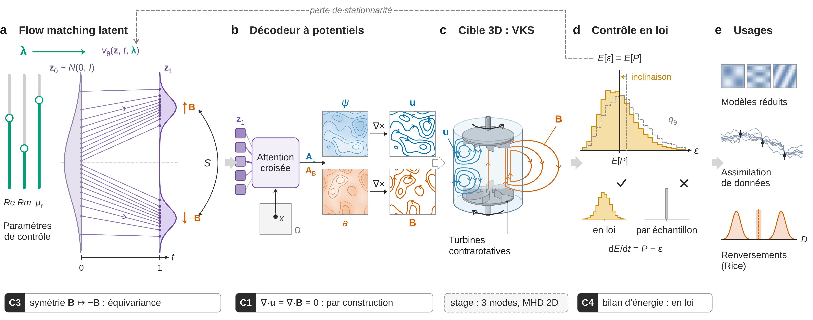
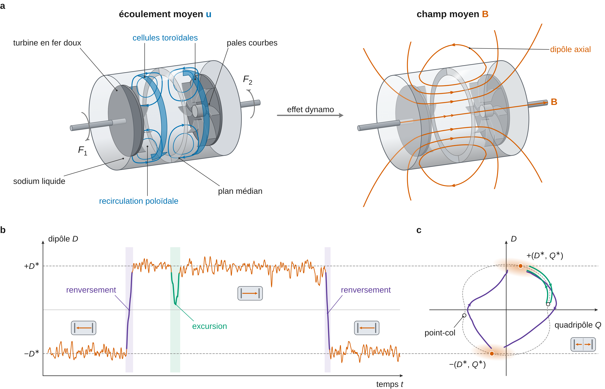
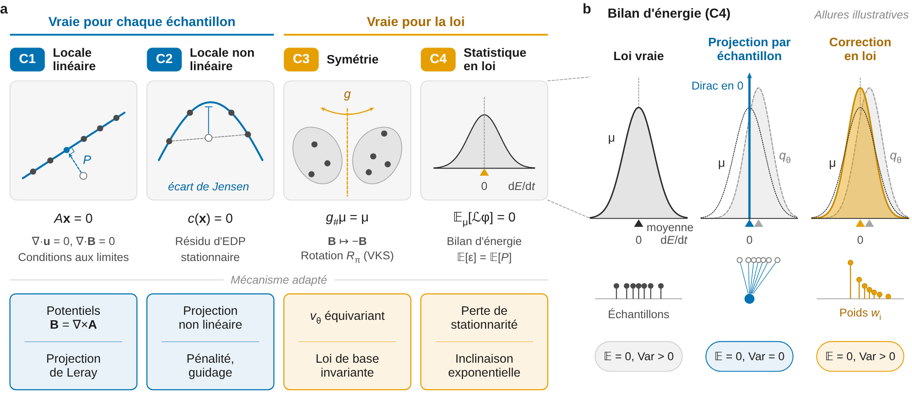
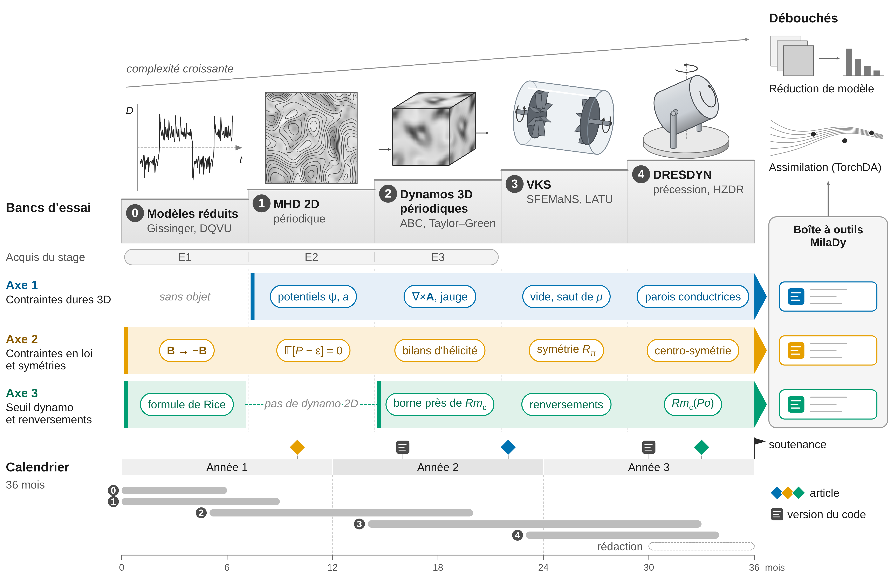

Modèles génératifs conditionnels à contraintes physiques dures et en loi pour les dynamos turbulentes
Proposition de sujet de thèse · projet ANR MilaDy · co-encadrement S. Cheng (ENPC/CEREA) et D. Lucor (LISN)
| Rubrique | Contenu |
|---|---|
| Titre | Modèles génératifs conditionnels à contraintes physiques dures et en loi pour les dynamos turbulentes |
| Projet | ANR MilaDy, « Modélisation par apprentissage automatique des dynamos turbulentes », ANR-25-CE51-0077 (projet de recherche collaborative, comité CE51). Coordination : C. Nore (LISN). Partenaires : LISN, laboratoire Lagrange (Observatoire de la Côte d’Azur, Nice), CEREA (École nationale des ponts et chaussées). Début en janvier 2026, durée 48 mois (page de l’ANR). |
| Encadrement envisagé | S. Cheng (CEREA, ENPC) et D. Lucor (LISN, CNRS). La page « Opportunities » de S. Cheng indique : « The PhD student will be co-supervised by Sibo Cheng and Didier Lucor » ; l’offre de stage 2027 précise qu’une thèse financée dans le projet « may be offered » selon les résultats du stage. |
| Collaborations | C. Nore (LISN : code SFEMaNS, simulations de VKS et de la précession) et Y. Ponty (Lagrange, OCA : codes pseudo-spectraux, code LATU, dynamos Taylor–Green et ABC), comme dans l’offre de stage. |
| Lieux | CEREA (ENPC, Champs-sur-Marne) ; séjours proposés au LISN (Université Paris-Saclay) et à l’OCA (Nice), voir le calendrier. |
| Durée | 36 mois. Hypothèse de travail : début à l’automne 2027, après le stage du printemps 2027. |
| Mots-clés | flow matching conditionnel ; contraintes dures (potentiel vecteur, jauge, conditions de raccord) ; contraintes en loi (identités de stationnarité, I-projection) ; équivariance ; formule de Rice ; renversements ; seuil dynamo ; VKS ; DRESDYN ; réduction de modèle ; assimilation de données |
| Point de départ | le rapport de stage prospectif et ses trois expériences E1 à E3 ; les modules de préparation |
Statut de ce document Ce sujet de thèse est une proposition indépendante, rédigée pour préparer le stage MilaDy 2027. Il n’a été ni demandé ni validé par S. Cheng, D. Lucor, C. Nore, Y. Ponty ou le consortium MilaDy : l’encadrement indiqué est seulement « envisagé », d’après la page de S. Cheng citée dans la fiche (https://scheng2024.github.io/opportunities/). Le stage n’a pas encore eu lieu. Les résultats appelés « résultats du stage » viennent des expériences à petite échelle, sur processeur (CPU), de ce dépôt (experiences/), et leurs chiffres sont tirés du condensé experiences/resultats/digest.md. Les résultats publiés sont attribués à leurs auteurs ; ce que ce travail revendique est écrit « à notre connaissance, après une recherche bibliographique au 6 novembre 2026 » ; les conjectures sont étiquetées comme telles. Le calendrier, les critères chiffrés et le budget de calcul sont des hypothèses de travail à discuter.
Résumé
Une dynamo turbulente engendre un champ magnétique dont la statistique dépend fortement des paramètres de contrôle (nombres de Reynolds cinétique et magnétique, perméabilité des matériaux, asymétrie du forçage) et qui peut se renverser brusquement, comme dans l’expérience von Kármán Sodium (VKS). Les simulations directes de ces écoulements sont coûteuses, si bien qu’on ne dispose que de quelques points dans l’espace des paramètres et de peu de renversements par simulation. Le projet ANR MilaDy veut en tirer des modèles réduits pour étudier les renversements et pour explorer le dispositif DRESDYN ; l’offre de stage associée demande des modèles génératifs conditionnés par les paramètres, qui respectent le bilan d’énergie et la divergence nulle.
La thèse proposée construit des générateurs conditionnels d’instantanés (\mathbf{u}, \mathbf{B}) par flow matching et y impose les contraintes physiques au niveau où elles sont vraies. Les contraintes dures, vraies pour chaque champ (divergence nulle, conditions de raccord au vide, sauts de perméabilité), passent par l’architecture : décodeurs fonctionnels à potentiel vecteur en domaine borné. Les contraintes en loi, vraies seulement pour l’ensemble des champs, passent par la loi générée : symétries \mathbf{B} \to -\mathbf{B} et R_\pi par équivariance, identités de stationnarité \mathbb{E}_{\mu_{\boldsymbol\lambda}}[\mathcal{L}_{\boldsymbol\lambda}\varphi] = 0 (bilans d’énergie et d’hélicités) par une perte à l’entraînement qui s’applique aussi aux paramètres sans données, ou par inclinaison exponentielle à l’échantillonnage.
Le sujet relie ensuite la loi générée aux renversements. La formule de Rice donne la fréquence des passages du moment dipolaire par zéro à partir de la seule loi stationnaire et du second membre des équations, calculable sur un instantané : un générateur d’instantanés prédit ainsi un taux de renversement sans intégration en temps. La thèse en établit les conditions de validité et les limites (bavardage autour de zéro, temps d’attente que la loi ne détermine pas), et quantifie l’erreur inévitable d’un générateur régulier en \boldsymbol\lambda près d’un seuil dynamo (Proposition 9 de la note théorique commune). Les champs générés servent enfin à identifier des modèles réduits de type DQVU et de loi a priori pour l’assimilation de données, dont l’a posteriori est bimodal en \pm\mathbf{B}.
Le plan expérimental monte une échelle de cinq paliers : modèles réduits de renversements (Gissinger, DQVU), MHD 2D périodique, dynamos 3D périodiques (ABC, Taylor–Green), VKS en géométrie cylindrique (SFEMaNS, LATU), puis DRESDYN (précession). Les trois premiers paliers prolongent les expériences E1 à E3 du stage. Chaque palier a ses critères de succès chiffrés et ses conditions d’arrêt ; le budget est estimé à environ 10^4 heures de GPU, sous des hypothèses explicites (§3.7).
1. Contexte et piste retenue
1.1 Deux pistes, une thèse
La page Encadrants compare plusieurs pistes de thèse situées à l’intersection des travaux de S. Cheng, D. Lucor, C. Nore et Y. Ponty. Ce sujet fusionne les deux premières. La piste A vise un générateur conditionnel de champs MHD 3D paramétriques, p(\mathbf{u}, \mathbf{B} \mid Re, Rm, \mu_r, \text{asymétrie}), pour VKS ; ses verrous sont la généralisation hors des quelques points simulés, la préservation de \nabla\cdot\mathbf{u} = 0 et \nabla\cdot\mathbf{B} = 0 après décodage, les symétries et la représentation hybride Fourier × éléments finis des données. La piste B vise la génération et la prévision probabiliste des renversements et des événements rares ; ses verrous sont la rareté des renversements, des statistiques à queue lourde et la cohérence entre champs générés et dynamique réduite.
Trois raisons justifient la fusion. La première est institutionnelle : les deux objectifs officiels de MilaDy sont l’étude des renversements et des dynamos « explosives » par des modèles réduits capables de distinguer précurseur, renversement et rebond, et l’optimisation de DRESDYN par des modèles réduits paramétriques (page de l’ANR) ; l’offre de stage demande des champs 3D conditionnés par les paramètres, qui respectent « energy balance and divergence-free conditions » et qui servent ensuite aux modèles réduits et à l’assimilation. Un générateur conditionnel (A) dont on sait extraire la statistique des renversements (B) répond aux deux objectifs à la fois.
La deuxième raison est théorique, et c’est le cœur du sujet. Deux résultats relient un générateur d’instantanés à la statistique des renversements sans demander de longues séries temporelles. Les identités de stationnarité (classe C4 de la taxonomie) contraignent la loi générée, y compris à des paramètres où l’on n’a pas de données. La formule de Rice transforme la loi stationnaire et le second membre F_{\boldsymbol\lambda} des équations en une fréquence de passages du dipôle par zéro. La symétrie \mathbf{B} \to -\mathbf{B} fait le lien entre les deux : elle fixe les poids des deux polarités, que les identités de stationnarité ne fixent pas (Proposition 4 de la note commune et §2.4).
La troisième raison tient aux risques. La piste B seule exige de longues séries pour estimer des fréquences d’événements rares, alors que chaque simulation n’en contient que quelques-uns. La fusion tire des instantanés tout ce que la loi stationnaire contient (moyennes, bilans, fréquence moyenne des passages) et réserve l’information temporelle à ce que la loi ne contient pas, comme la loi des temps d’attente : c’est une limite explicite de la question Q3, démontrée au §2.5. Les autres pistes ne sont pas abandonnées : l’assimilation de données avec a priori génératif devient l’usage en aval de la question Q4 ; DRESDYN devient le palier 4 ; les contraintes dures sur maillages hybrides deviennent la question Q1 ; les bancs d’essai et métriques physiques deviennent le protocole d’évaluation commun du §3.1.

1.2 Ce que le stage a établi
Les trois expériences du stage, détaillées dans la section Expériences du rapport, tournent sur processeur en quelques heures. Elles ne démontrent rien à l’échelle des dynamos de laboratoire ; elles valident la chaîne de calcul et testent les propositions de la note théorique sur des cas où la vérité est connue. Les chiffres de E2 et E3 ci-dessous viennent du condensé des résultats ; ceux de E1, dont le calcul complet était en cours à la rédaction, sont dans le rapport et ne sont pas repris ici.
E1, modèle de Gissinger à trois modes. Le modèle (Q, D, V) de Gissinger (2012) produit des renversements chaotiques du dipôle D ; E1 apprend la loi stationnaire p(Q, D, V \mid \Gamma) par flow matching conditionnel, autour du paramètre de forçage où apparaissent les renversements. Il compare un modèle de référence, l’augmentation des données par la symétrie, un champ de vitesse équivariant, l’inclinaison exponentielle sur neuf identités de stationnarité (monômes de degré au plus 2), un réglage fin par perte de stationnarité imposée à toutes les valeurs de \Gamma, et la projection de chaque échantillon sur \mathrm{d}E/\mathrm{d}t = 0. Il estime aussi la fréquence des passages de D par zéro par la formule de Rice à partir des seuls échantillons générés, et la compare au comptage sur les simulations. E1 teste les Propositions 4 à 9 de la note théorique.
E2, MHD 2D forcée. E2 génère des instantanés (\mathbf{u}, \mathbf{B}) d’une MHD 2D périodique forcée par un bruit blanc, sur une grille 32^2, conditionnés par la diffusivité magnétique \eta (six valeurs d’entraînement, cinq valeurs de test intercalées, 2400 instantanés d’entraînement par \eta). La représentation est faite de 220 modes de Fourier indépendants (dimension 880 en potentiels, 1760 en composantes), et le réseau est un perceptron de largeur 1024 entraîné 6000 itérations. Aux valeurs de test de \eta, les mesures sont les suivantes.
- La divergence relative de \mathbf{u} vaut 0{,}41 pour le modèle libre, 0{,}34 avec une pénalité douce, 2{,}0 \times 10^{-8} avec le flot projeté, 5{,}1 \times 10^{-17} avec la projection finale et 1{,}8 \times 10^{-17} avec les potentiels (\psi, a). Les potentiels donnent donc la précision machine sans dégrader la qualité : leur distance d’énergie entre lois de descripteurs (2{,}58) est celle de la projection finale (2{,}61).
- La pénalité douce, pourtant sans biais à l’optimum pour une contrainte linéaire (Proposition 3 de la note), dégrade l’énergie magnétique : erreur relative de 1{,}68 sur \mathbb{E}[E_B], contre 0{,}37 pour les potentiels. L’absence de biais en population ne dit rien de l’optimisation à budget fini.
- Le réglage fin des potentiels par une perte de stationnarité (bilan d’énergie moyen imposé à des \eta tirés au hasard, donc aussi aux \eta de test sans données) ramène le résidu relatif du bilan d’énergie en loi de 0{,}46 (témoin réglé sans la perte) à 0{,}061, l’erreur de spectre de 0{,}165 à 0{,}070 et la distance d’énergie de 2{,}52 à 0{,}70. Le plancher de bruit Monte-Carlo (sous-échantillon des données de même taille) est à 0{,}0018 : le modèle reste loin des données.
- Le recalage de chaque échantillon sur le bilan d’énergie annule le résidu en loi (8{,}3 \times 10^{-6}) mais écrase la dispersion de la dissipation : son écart type ne vaut plus que 8{,}6 \times 10^{-4} fois celui des données, comme le prévoit le Corollaire 6 de la note. L’inclinaison exponentielle sur trois identités (énergie, hélicité croisée, \langle a^2\rangle) réduit le résidu d’énergie de 0{,}47 à 0{,}19, mais avec une taille effective moyenne de 0{,}29 fois le nombre d’échantillons, une dispersion réduite (rapport des écarts types 0{,}20) et une distance d’énergie qui augmente (2{,}62 à 4{,}15) : repondérer un modèle trop éloigné des données ne suffit pas.
E3, dynamo cinématique ABC. E3 calcule le taux de croissance \lambda(Rm) du champ magnétique dans l’écoulement ABC (A = B = C = 1, Rm = 1/\eta) par un schéma pseudo-spectral 32^3 en forme rotationnelle. Les seuils interpolés valent 8{,}87, 17{,}6 et 26{,}8, à comparer aux fenêtres publiées 8{,}9 < Rm < 17{,}5 et Rm > 27 (Archontis et al. 2003, qui citent Galloway et Frisch). La divergence relative reste inférieure à 1{,}6 \times 10^{-16} à tous les Rm. Près du deuxième seuil, la précision est limitée : à Rm = 17{,}5, le taux vaut 2{,}3 \times 10^{-4} sur la seconde moitié de la simulation, -2{,}2 \times 10^{-4} sur le dernier quart et -5{,}2 \times 10^{-4} à la résolution 48^3. E3 ne contient aucun modèle génératif : il valide le palier 3D et la forme rotationnelle qui conserve \nabla\cdot\mathbf{B} = 0.


Ces expériences ne démontrent pas la faisabilité en 3D, en domaine borné ou à haute résolution ; le §4.3 détaille ce qu’elles établissent et ce qu’elles laissent ouvert.
1.3 Questions de recherche
La thèse s’organise autour de quatre questions. Chacune est reprise dans la partie théorique (§2), traduite en expériences par palier (§3) et en risques (§4).
Q1 — Contraintes dures en 3D en géométrie bornée. Dans une boîte périodique, la divergence nulle s’impose par la projection de Leray en Fourier ou par un potentiel vecteur en jauge de Coulomb, \hat{\mathbf{A}} = \mathrm{i}\mathbf{k}\times\hat{\mathbf{B}}/|\mathbf{k}|^2 ; E2 et E3 le confirment. Les dynamos expérimentales sont en géométrie cylindrique, avec des parois, un raccord au champ extérieur et des sauts de perméabilité. Les sous-questions sont les suivantes.
- Quel espace de potentiels décrire pour que \mathbf{B} = \nabla\times\mathbf{A} parcoure exactement l’espace des champs admissibles, avec quelle jauge et quelles conditions de bord sur \mathbf{A} (§2.1) ?
- Comment imposer le raccord à un champ potentiel extérieur (condition de « vide »), qui est linéaire mais non local, sans résoudre un problème de Laplace extérieur par échantillon ?
- Comment représenter les sauts de perméabilité \mu_r des turbines en fer doux, où \mathbf{B}\cdot\mathbf{n} est continu mais où la composante tangentielle de \mathbf{B}/\mu_r l’est aussi, ce qui impose un pli au potentiel ?
- Comment décoder dans la représentation native de SFEMaNS, décomposition de Fourier en azimut et éléments finis de Lagrange dans le plan méridien, avec la régularité sur l’axe et un contrôle discret de la divergence comparable à celui du code ?
- Une décomposition poloïdale–toroïdale à deux scalaires est-elle préférable au potentiel vecteur à trois composantes plus une jauge ?
Q2 — Contraintes en loi pour des EDP de champs. Les identités de stationnarité sont connues (Echeverría 1982 ; Ethier et Kurtz 1986) et la forme faible de Fokker–Planck a déjà servi de perte à un générateur d’échantillons en dimension au plus 100 (Cai et al. 2026). La thèse les applique au générateur d’une EDP de champs, conditionné par des paramètres. Les sous-questions sont les suivantes.
- Quelles fonctions test retenir : l’énergie, les hélicités magnétique et croisée, l’énergie par bande spectrale (bilan échelle par échelle), des fonctions aléatoires ? Comment pondérer et normaliser les identités ?
- Comment estimer la perte sans biais et avec une variance maîtrisée quand chaque évaluation demande d’échantillonner le générateur de façon différentiable (§2.3) ?
- Que garantit la perte aux paramètres sans données, où elle est la seule information ? E2 montre un gain à ces paramètres ; il faut comprendre quand il persiste.
- Comment vivre avec la non-unicité des mesures invariantes : toute mesure invariante (point fixe, orbite périodique instable, mélange) vérifie les identités, si bien que l’attache aux données reste indispensable (§2.2) ?
Q3 — Seuil dynamo et renversements. Le générateur conditionnel doit franchir le seuil dynamo et la zone où les renversements apparaissent. Les sous-questions sont les suivantes.
- Sous quelles conditions la formule de Rice s’applique-t-elle au moment dipolaire D = \ell(\mathbf{B}) d’une dynamo MHD, avec \dot D = \ell(\nabla\times(\mathbf{u}\times\mathbf{B}) + \eta\Delta\mathbf{B}) calculé sur l’instantané généré ; comment corriger le bavardage autour de zéro (§2.5) ?
- Quelle erreur un générateur régulier en \boldsymbol\lambda commet-il près d’une bifurcation, sous-critique (saut de loi) ou supercritique (amplitude en racine carrée) (§2.6) ?
- Dans une zone d’hystérésis, faut-il conditionner le générateur par l’état ou par l’histoire, et comment ?
- Comment estimer ce que la loi stationnaire ne donne pas, comme la loi des temps d’attente entre renversements, à partir de trajectoires courtes lancées depuis des échantillons générés ?
Q4 — Usages en aval. Les champs générés doivent servir au projet. Les sous-questions sont les suivantes.
- Peut-on identifier un modèle réduit de type DQVU (Bousquet et al. 2026) à partir d’instantanés générés et du second membre F_{\boldsymbol\lambda}, sans dériver des séries temporelles, et à quelles conditions la dérive réduite hérite-t-elle des identités de stationnarité (§2.7) ?
- Comment utiliser le générateur comme loi a priori dans l’assimilation de données (ensembles d’arrière-plan, variable latente) avec TorchDA (Cheng et al. 2025), quand l’a posteriori est bimodal en \pm\mathbf{B} près d’un renversement ?

1.4 Antériorité et positionnement
Le sujet s’appuie sur des résultats publiés qu’il faut citer et non revendiquer. Le tableau sépare ce qui est connu de ce que la thèse ajoute.
| Brique | Déjà publié (à citer) | Ce que la thèse ajoute |
|---|---|---|
| Invariance et identités \mathbb{E}_\mu[\mathcal{L}\varphi] = 0 | critère par le générateur sur un cœur de fonctions test (Echeverría 1982 ; Ethier et Kurtz 1986 ; Liggett, via Behme et Schnurr 2015) ; méthode de Stein par le générateur (Barbour 1988, 1990 ; Gorham et Mackey 2015 ; Gorham et al. 2019 ; Liu, Lee et Jordan 2016) | identités dérivées pour la MHD forcée (énergie, hélicités, bandes spectrales), avec terme d’Itô |
| Forme faible de Fokker–Planck comme perte d’un générateur | Weak Generative Sampler (Cai, Cao, Huang, Zhou, SIAM J. Sci. Comput. 2026), dimension au plus 100 ; antécédent min-max WAN (Zang et al. 2020) | perte conditionnelle paramétrique pour une EDP de champs, imposée à des paramètres sans données ; estimateur sans biais par demi-lots |
| Apprendre par la mesure invariante | Yang et al. 2023 ; Botvinick-Greenhouse et al. 2023 ; Jiang et al. 2023 ; DySLIM (Schiff et al. 2024) ; PINN-IMSM (Chen et al. 2026) | application aux bilans d’une dynamo, avec symétrie imposée séparément |
| I-projection, inclinaison exponentielle d’un générateur | Csiszár 1975 ; Jaynes 1957 ; Khalifa et al. 2021 ; Pitera et Chodera 2012 ; Mun 2026 (moments, à l’inférence) ; Tauberschmidt et al. 2026 (résidu d’EDP faible, récompense par échantillon) | identités sans valeur cible, linéaires en la loi, au lieu de moments externes |
| Divergence nulle dans les modèles génératifs | fonction de courant (FunDiff, Wang et al. 2026) ; Leray (Genuist et al. 2026 ; PCDM, Li et al. 2026 ; Li X. et al. 2026) ; réseaux à divergence nulle (Richter-Powell et al. 2022) | potentiel vecteur en domaine borné avec raccord au vide et sauts de \mu_r |
| Flots équivariants et lois invariantes | résultat classique des flots normalisants équivariants | équivariance jointe état–paramètre pour R_\pi (asymétrie du forçage) |
| Fréquence de passages par zéro | formule de Rice (Rice 1944 ; Azaïs et Wschebor 2009) | application à un générateur d’instantanés de dynamo, sans intégration en temps |
Ce que ce travail revendique est formulé avec prudence : à notre connaissance, après une recherche bibliographique au 6 novembre 2026, aucune publication ne combine les éléments suivants.
- Les identités de stationnarité d’une EDP de champs (MHD : bilans d’énergie, d’hélicité croisée, de \langle a^2\rangle en 2D) utilisées comme contraintes en loi d’un modèle génératif conditionnel paramétrique, imposables à des paramètres sans données, et qui sont des identités sans valeur cible (contrairement aux moments externes de Khalifa et al. 2021 ou de Mun 2026).
- L’énoncé et la mesure de l’incohérence d’une contrainte par échantillon pour un bilan stationnaire (Corollaire 6 de la note, mesuré dans E1 et E2).
- La formule de Rice appliquée à un générateur d’instantanés pour prédire la fréquence des renversements sans intégration temporelle (aucune antériorité trouvée).
- La complémentarité entre symétrie et stationnarité : les identités ne fixent pas les poids des composantes ergodiques symétriques, l’équivariance est nécessaire.
- Un point technique : l’estimateur naïf (carré d’une moyenne de mini-lot) d’une perte de stationnarité vaut (\mathbb{E}g)^2 + \mathrm{Var}(g)/n et pénalise la dispersion de la loi ; l’estimateur par produit des moyennes de deux demi-lots supprime ce biais.
- La borne inférieure d’erreur près d’un saut de loi (Proposition 9 de la note), appliquée au seuil dynamo.
L’absence de modèle de diffusion ou de flow matching entraîné sur des simulations de dynamo est une affirmation négative : la recherche n’en a pas trouvé (le travail MHD le plus proche, Kacmaz et al. 2025, est en 2D et son modèle génératif n’impose pas \nabla\cdot\mathbf{B} = 0), mais une absence ne se prouve pas. Une veille sera refaite avant chaque soumission.
2. Partie théorique
Cette partie reprend la note théorique commune au rapport et au sujet de thèse (specs/theorie-brief.md), sans la contredire, et l’étend aux questions Q1 à Q4. Les encadrés sont numérotés 2.n ; quand un énoncé reprend une proposition de la note, son numéro dans la note est indiqué entre crochets, par exemple « [note : Prop. 8] ». Les énoncés sont de trois sortes : résultats publiés, attribués à leurs auteurs ; propositions démontrées ici, en général élémentaires et parfois sans doute connues sous d’autres formes ; conjectures, étiquetées comme telles, avec ce qu’il faudrait pour les démontrer. Les notations sont celles du site (specs/notations.md) ; le temps du flot t \in [0, 1] n’est pas un temps physique, et le champ de vitesse du flot v_\theta ne doit pas être confondu avec la vitesse physique \mathbf{u}.
Le cadre est celui de la note. Les paramètres de contrôle sont \boldsymbol\lambda \in \Lambda \subset \mathbb{R}^p. L’état discrétisé \mathbf{x} \in \mathbb{R}^D suit \mathrm{d}\mathbf{x} = F_{\boldsymbol\lambda}(\mathbf{x})\,\mathrm{d}t + \Sigma\,\mathrm{d}W_t, de générateur \mathcal{L}_{\boldsymbol\lambda}\varphi = F_{\boldsymbol\lambda}\cdot\nabla\varphi + \tfrac12\Sigma\Sigma^\top : \nabla^2\varphi. Les données sont des instantanés d’un état statistiquement stationnaire, de loi \mu_{\boldsymbol\lambda}. Le modèle est q_\theta(\cdot\mid\boldsymbol\lambda) = (\Phi^{\boldsymbol\lambda}_1)_\#\mathcal{N}(0, I), où \Phi^{\boldsymbol\lambda}_t est le flot de \dot{\mathbf{z}} = v_\theta(\mathbf{z}, t, \boldsymbol\lambda), appris par flow matching (Lipman et al. 2023) sur le chemin linéaire \mathbf{x}_t = (1-t)\mathbf{x}_0 + t\mathbf{x}_1.
Le tableau suivant fait la correspondance entre les énoncés de la note et ceux de cette page.
| Note théorique | Cette page | Objet |
|---|---|---|
| Proposition 1 | Proposition 2.3 | contrainte C1 par construction, étendue au domaine borné |
| Propositions 2 et 3 | Proposition 2.10 | flot optimal sur un sous-espace ; pénalité linéaire sans biais |
| Proposition 4 | Proposition 2.24, Remarque 2.26 | équivariance, étendue à une action jointe état–paramètre |
| Proposition 5 | Propositions 2.12 et 2.13 | identités de stationnarité, bilans de la MHD tronquée |
| Corollaire 6 | Corollaire 2.16 | incohérence de la contrainte par échantillon, avec une borne en W_1 |
| Proposition 7 | Proposition 2.21 | I-projection, démonstration sans hypothèse de finitude |
| Proposition 8 | Propositions 2.29 à 2.31 | formule de Rice, seuils, estimateur à fenêtre |
| Proposition 9 | Propositions 2.34 à 2.36 | erreur près d’un saut de loi et d’un seuil supercritique |
| (nouveau) | Propositions 2.6, 2.8, 2.15, 2.19, 2.20, 2.32, 2.39 à 2.41 ; Conjectures 2.17, 2.33, 2.38 | interfaces, poloïdal–toroïdal, non-suffisance, estimateur, cohérence, temps d’attente, réduction de modèle et assimilation |

2.1 Espaces de champs contraints et décodeurs à divergence nulle en domaine borné
La question Q1 demande de générer des champs magnétiques qui vérifient exactement \nabla\cdot\mathbf{B} = 0 dans un domaine borné, avec des conditions de bord et d’interface. On fixe d’abord les espaces, puis on montre ce qu’un décodeur à potentiel garantit et ce qu’il ne garantit pas.
Définition 2.1 — Espaces de champs Soit \Omega \subset \mathbb{R}^3 un ouvert borné connexe à bord lipschitzien, dont le bord \Gamma = \partial\Omega a pour composantes connexes \Gamma_0 (la frontière extérieure), \Gamma_1, \dots, \Gamma_I, de normale sortante \mathbf{n}. On note
H(\mathrm{div}, \Omega) = \{\mathbf{v} \in L^2(\Omega)^3 : \nabla\cdot\mathbf{v} \in L^2(\Omega)\}, \qquad H(\mathrm{rot}, \Omega) = \{\mathbf{v} \in L^2(\Omega)^3 : \nabla\times\mathbf{v} \in L^2(\Omega)^3\}.
Un champ de H(\mathrm{div}, \Omega) a une trace normale \mathbf{v}\cdot\mathbf{n} \in H^{-1/2}(\Gamma) ; un champ de H(\mathrm{rot}, \Omega) a une trace tangentielle \mathbf{v}\times\mathbf{n}. L’espace des champs magnétiques admissibles est
\mathfrak{B}(\Omega) = \{\mathbf{B} \in H(\mathrm{div}, \Omega) : \nabla\cdot\mathbf{B} = 0,\ \langle \mathbf{B}\cdot\mathbf{n}, 1\rangle_{\Gamma_i} = 0 \text{ pour } 0 \le i \le I\}.
Quand \Gamma est connexe (I = 0), la condition de flux découle de \nabla\cdot\mathbf{B} = 0 par le théorème de la divergence. Le domaine est dit simplement connexe quand toute courbe fermée s’y contracte en un point ; un cylindre plein l’est, un tore ne l’est pas.
Le résultat suivant est publié ; on l’énonce dans le cas simplement connexe, qui est celui d’une cuve cylindrique pleine, et l’on démontre la partie unicité, la plus utile pour un décodeur.
Théorème 2.2 — Potentiel vecteur en jauge de Coulomb (Amrouche, Bernardi, Dauge et Girault 1998 ; Amrouche et Seloula 2011) Soit \Omega borné, connexe, simplement connexe, de classe C^{1,1}.
Pour tout \mathbf{B} \in \mathfrak{B}(\Omega), il existe un unique \mathbf{A} \in H^1(\Omega)^3 tel que \nabla\times\mathbf{A} = \mathbf{B}, \nabla\cdot\mathbf{A} = 0 dans \Omega et \mathbf{A}\cdot\mathbf{n} = 0 sur \Gamma ; de plus \lVert\mathbf{A}\rVert_{H^1} \le C\,\lVert\mathbf{B}\rVert_{L^2}.
Si de plus \mathbf{B}\cdot\mathbf{n} = 0 sur \Gamma, il existe un unique \mathbf{A} \in H^1(\Omega)^3 tel que \nabla\times\mathbf{A} = \mathbf{B}, \nabla\cdot\mathbf{A} = 0, \mathbf{A}\times\mathbf{n} = 0 sur \Gamma et \langle\mathbf{A}\cdot\mathbf{n}, 1\rangle_{\Gamma_i} = 0 pour 0 \le i \le I.
Les deux énoncés sont les Théorèmes 3.2 et 3.4 d’Amrouche et Seloula (2011), énoncés en norme L^p et pour un domaine éventuellement non simplement connexe (des conditions de flux à travers des coupures s’ajoutent alors) ; le cas hilbertien en domaine non régulier est traité par Amrouche et al. (1998).
Preuve. Unicité dans (i). Si \mathbf{A}_1 et \mathbf{A}_2 conviennent, \mathbf{w} = \mathbf{A}_1 - \mathbf{A}_2 vérifie \nabla\times\mathbf{w} = 0, \nabla\cdot\mathbf{w} = 0 et \mathbf{w}\cdot\mathbf{n} = 0. Un champ irrotationnel de carré intégrable sur un domaine simplement connexe est un gradient (Girault et Raviart 1986) : \mathbf{w} = \nabla\chi avec \chi \in H^1(\Omega). Alors \Delta\chi = 0 dans \Omega et \partial_n\chi = 0 sur \Gamma, et la formule de Green donne \int_\Omega |\nabla\chi|^2 = \int_\Gamma \chi\,\partial_n\chi = 0, donc \mathbf{w} = 0.
Unicité dans (ii). Comme ci-dessus \mathbf{w} = \nabla\chi avec \Delta\chi = 0. La condition \mathbf{w}\times\mathbf{n} = 0 dit que le gradient tangentiel de \chi est nul sur \Gamma : \chi vaut une constante c_i sur chaque \Gamma_i. La formule de Green donne \int_\Omega |\nabla\chi|^2 = \sum_i c_i \langle \mathbf{w}\cdot\mathbf{n}, 1\rangle_{\Gamma_i} = 0, donc \mathbf{w} = 0.
Existence dans (i), esquisse. Grâce aux conditions de flux, on prolonge \mathbf{B} en un champ \tilde{\mathbf{B}} à divergence nulle et à support compact dans \mathbb{R}^3 (on remplit chaque trou par un champ à divergence nulle de trace normale prescrite, ce qui revient à un problème de Neumann compatible). Le potentiel de Biot–Savart \tilde{\mathbf{A}} = \nabla\times(-\Delta)^{-1}\tilde{\mathbf{B}} vérifie \nabla\times\tilde{\mathbf{A}} = \tilde{\mathbf{B}} et \nabla\cdot\tilde{\mathbf{A}} = 0. On corrige enfin la trace normale : si \chi résout \Delta\chi = 0 dans \Omega, \partial_n\chi = -\tilde{\mathbf{A}}\cdot\mathbf{n} sur \Gamma (problème compatible car \int_\Gamma \tilde{\mathbf{A}}\cdot\mathbf{n} = \int_\Omega \nabla\cdot\tilde{\mathbf{A}} = 0), alors \mathbf{A} = \tilde{\mathbf{A}} + \nabla\chi convient. La régularité H^1 et l’estimation viennent de la régularité elliptique sur un domaine C^{1,1} ; on renvoie aux sources pour les détails. ∎
Le théorème dit qu’en jauge de Coulomb avec \mathbf{A}\cdot\mathbf{n} = 0, le potentiel est une coordonnée de l’espace des champs admissibles : on ne perd aucun champ et l’on n’en compte aucun deux fois. C’est la généralisation 3D, en domaine borné, de la fonction de courant utilisée par FunDiff (Wang et al. 2026) et par l’expérience E2.
Proposition 2.3 — Décodeur à potentiel en domaine borné [note : Prop. 1] Soit \mathcal{D} : \mathcal{Z} \to H^1(\Omega)^3 un décodeur mesurable et \mathbf{B} = \nabla\times\mathcal{D}(\mathbf{z}).
Quelle que soit la loi de \mathbf{z}, \mathbf{B} \in \mathfrak{B}(\Omega) presque sûrement : la contrainte de divergence (classe C1) est satisfaite par construction.
Si \mathcal{D} prend ses valeurs dans l’espace de jauge G = \{\mathbf{A} \in H^1(\Omega)^3 : \nabla\cdot\mathbf{A} = 0,\ \mathbf{A}\cdot\mathbf{n} = 0 \text{ sur } \Gamma\} et si \Omega est simplement connexe et C^{1,1}, l’application T = \nabla\times : G \to \mathfrak{B}(\Omega) est une bijection linéaire continue d’inverse continu. Pour deux lois \tilde\nu_1, \tilde\nu_2 sur G,
\lVert T^{-1}\rVert^{-1}\, W_2(\tilde\nu_1, \tilde\nu_2) \;\le\; W_2(T_\#\tilde\nu_1, T_\#\tilde\nu_2) \;\le\; \lVert T\rVert\, W_2(\tilde\nu_1, \tilde\nu_2),
avec la norme H^1 sur G et la norme L^2 sur \mathfrak{B}. Apprendre la loi des potentiels en jauge fixée équivaut donc, à des constantes près, à apprendre la loi des champs.
Preuve.
- Pour \chi \in C_c^\infty(\Omega), \langle\nabla\cdot\mathbf{B}, \chi\rangle = -\int_\Omega (\nabla\times\mathbf{A})\cdot\nabla\chi = -\int_\Omega \mathbf{A}\cdot\nabla\times\nabla\chi = 0, l’intégration par parties étant licite car \chi est à support compact. Le flux de \nabla\times\mathbf{A} à travers chaque surface fermée \Gamma_i est nul (formule de Stokes sur une surface sans bord, étendue à H^1 par densité).
- T est linéaire, continue de H^1 dans L^2, injective et surjective par le Théorème 2.2 (i), et l’estimation \lVert\mathbf{A}\rVert_{H^1} \le C\lVert\mathbf{B}\rVert_{L^2} donne la continuité de T^{-1}. Pour un couplage \pi de (\tilde\nu_1, \tilde\nu_2), (T\times T)_\#\pi est un couplage des images et \lVert T\mathbf{a} - T\mathbf{b}\rVert \le \lVert T\rVert\,\lVert\mathbf{a} - \mathbf{b}\rVert ; on prend l’infimum. L’autre inégalité s’obtient de même avec T^{-1}. ∎
Remarque 2.4 — Jauge non fixée Si le décodeur ne fixe pas la jauge, deux potentiels \mathbf{A} et \mathbf{A} + \nabla\chi donnent le même champ : la loi de \mathbf{B} reste bien définie, mais la loi cible dans l’espace des potentiels dépend de la jauge choisie pour préparer les données. Il faut donc calculer les potentiels d’entraînement dans une jauge fixée et unique (Théorème 2.2), sans quoi le flow matching apprend un bruit de jauge. Dans une boîte périodique, la jauge de Coulomb s’écrit \hat{\mathbf{A}}(\mathbf{k}) = \mathrm{i}\mathbf{k}\times\hat{\mathbf{B}}(\mathbf{k})/|\mathbf{k}|^2 pour \mathbf{k} \neq 0, puisque \mathrm{i}\mathbf{k}\times(\mathrm{i}\mathbf{k}\times\hat{\mathbf{A}}) = |\mathbf{k}|^2\hat{\mathbf{A}} quand \mathbf{k}\cdot\hat{\mathbf{A}} = 0.
Le raccord au vide est la deuxième difficulté. Dans VKS comme dans SFEMaNS, le conducteur \Omega est entouré d’un milieu isolant où le champ dérive d’un potentiel scalaire (Nore et al. 2018). Avec \mu_r = 1 de part et d’autre et sans courant de surface, \mathbf{B} est continu à travers \Gamma et se raccorde à un champ extérieur \nabla\phi avec \Delta\phi = 0 hors de \bar\Omega et \phi \to 0 à l’infini.
Remarque 2.5 — Le raccord au vide est une contrainte linéaire non locale Notons \mathcal{N} l’opérateur de Neumann-Dirichlet extérieur, qui associe à une donnée de flux g sur \Gamma (de moyenne nulle) la trace \phi|_\Gamma de la solution du problème extérieur \Delta\phi = 0, \partial_n\phi = g, \phi \to 0 à l’infini. La continuité de \mathbf{B} s’écrit \mathbf{B}\cdot\mathbf{n} = \partial_n\phi et \mathbf{n}\times\mathbf{B} = \mathbf{n}\times\nabla_\Gamma\phi, soit
\mathbf{n}\times\mathbf{B} = \mathbf{n}\times\nabla_\Gamma\,\mathcal{N}(\mathbf{B}\cdot\mathbf{n}) \quad \text{sur } \Gamma.
C’est une contrainte linéaire en \mathbf{B} (classe C1), mais non locale : la trace tangentielle en un point dépend du flux normal sur tout le bord. Deux conséquences en découlent. D’une part, les Propositions 2 et 3 de la note s’appliquent : la projection orthogonale sur cet espace est exacte et une pénalité sur la prédiction de fin de chemin est sans biais à l’optimum ; mais projeter coûte la résolution d’un problème extérieur par échantillon (par éléments de frontière, ou par une base d’harmoniques sphériques si l’on raccorde sur une sphère englobante). D’autre part, on peut aussi décoder conjointement \mathbf{A} dans le conducteur et \phi dans une couche isolante, puis raccorder par une pénalité d’interface, comme le fait SFEMaNS avec une méthode de pénalité intérieure (Guermond et al. 2007, 2009). Le choix entre ces voies est une sous-question de Q1. Les conditions simplifiées de pseudo-vide (\mathbf{H}\times\mathbf{n} = 0) sont locales mais déplacent le seuil : à Re = 1{,}5\times 10^3 et \mu_r = 50, Nore et al. (2018) trouvent Rm_c = 90 \pm 5 en pseudo-vide contre 130 \pm 10 avec la condition de vide.
La troisième difficulté est le saut de perméabilité aux turbines en fer doux. Dans la simulation de référence de Bousquet et al. (2026), \mu_r = 16 dans les turbines et 1 ailleurs. À travers une interface \Sigma sans courant de surface, la composante normale de \mathbf{B} et la composante tangentielle de \mathbf{H} = \mathbf{B}/\mu_r (en unités d’Alfvén) sont continues.
Proposition 2.6 — Ce qu’un potentiel garantit à un saut de perméabilité Soit \Omega = \Omega_- \cup \Sigma \cup \Omega_+, avec \mu_r = \mu_\pm constante dans \Omega_\pm et \mu_+ \neq \mu_-, et \mathbf{n} la normale à \Sigma dirigée vers \Omega_+.
Si \mathbf{A} \in H(\mathrm{rot}, \Omega), alors \mathbf{B} = \nabla\times\mathbf{A} vérifie \nabla\cdot\mathbf{B} = 0 au sens des distributions sur tout \Omega ; en particulier [\mathbf{B}\cdot\mathbf{n}]_\Sigma = 0.
Si \mathbf{A} est de classe C^1 au voisinage de \Sigma, alors [\mathbf{n}\times\mathbf{H}]_\Sigma = (1/\mu_+ - 1/\mu_-)\,\mathbf{n}\times\mathbf{B}, qui n’est nul que si \mathbf{B} est normal à \Sigma. Un décodeur régulier en espace (par exemple un perceptron des coordonnées, qui est C^\infty) ne peut donc pas satisfaire exactement la condition d’interface.
Construction proposée. Soit d la distance signée à \Sigma (positive dans \Omega_+), régulière dans un voisinage tubulaire de \Sigma, et \mathbf{n} = \nabla d ; hors de ce voisinage, le terme ajouté ci-dessous est multiplié par une fonction de troncature régulière égale à 1 près de \Sigma, ce qui ne change rien sur \Sigma. Pour \mathbf{A}_0 régulier, posons \mathbf{B}_0 = \nabla\times\mathbf{A}_0 et
\mathbf{A} = \mathbf{A}_0 + \kappa\,\lvert d\rvert\,\mathbf{n}\times\mathbf{B}_0, \qquad \kappa = \frac{\mu_- - \mu_+}{\mu_- + \mu_+}.
Alors \mathbf{B} = \nabla\times\mathbf{A} vérifie exactement \nabla\cdot\mathbf{B} = 0, [\mathbf{B}\cdot\mathbf{n}]_\Sigma = 0 et [\mathbf{n}\times\mathbf{H}]_\Sigma = 0.
Preuve.
Pour \chi \in C_c^\infty(\Omega), \nabla\chi \in H_0(\mathrm{rot}, \Omega) et la formule de Green dans H(\mathrm{rot}) (Girault et Raviart 1986) donne \int_\Omega (\nabla\times\mathbf{A})\cdot\nabla\chi = \int_\Omega \mathbf{A}\cdot\nabla\times\nabla\chi = 0. Si \mathbf{B} est régulier de part et d’autre de \Sigma, sa divergence au sens des distributions est la somme de la divergence ponctuelle, nulle, et de la mesure [\mathbf{B}\cdot\mathbf{n}]\,\delta_\Sigma ; elle est nulle, donc le saut aussi.
Si \mathbf{A} est C^1, \mathbf{B} est continu et [\mathbf{n}\times\mathbf{B}] = 0 ; alors \mathbf{n}\times\mathbf{H}_\pm = \mathbf{n}\times\mathbf{B}/\mu_\pm et l’on soustrait.
\mathbf{A} est continu (le terme ajouté s’annule sur \Sigma) et régulier par morceaux, donc dans H(\mathrm{rot}), et (i) s’applique. Posons \mathbf{A}_1 = \kappa\,\mathbf{n}\times\mathbf{B}_0. Comme \nabla\lvert d\rvert = \pm\mathbf{n} dans \Omega_\pm,
\mathbf{B} = \mathbf{B}_0 + \lvert d\rvert\,\nabla\times\mathbf{A}_1 + \nabla\lvert d\rvert\times\mathbf{A}_1, \qquad \mathbf{B}_\pm\big|_\Sigma = \mathbf{B}_0 \pm \mathbf{n}\times\mathbf{A}_1.
La composante normale \mathbf{n}\cdot\mathbf{B}_\pm = \mathbf{n}\cdot\mathbf{B}_0 est continue. Pour la composante tangentielle, \mathbf{n}\times(\mathbf{n}\times\mathbf{A}_1) = -\mathbf{A}_{1,t}, où \mathbf{A}_{1,t} = \kappa\,\mathbf{n}\times\mathbf{B}_0 est la partie tangentielle de \mathbf{A}_1 ; donc \mathbf{n}\times\mathbf{B}_\pm = (1 \mp \kappa)\,\mathbf{n}\times\mathbf{B}_0. La condition \mathbf{n}\times\mathbf{B}_+/\mu_+ = \mathbf{n}\times\mathbf{B}_-/\mu_- équivaut à (1-\kappa)\mu_- = (1+\kappa)\mu_+, c’est-à-dire à la valeur de \kappa annoncée. ∎
La construction (iii) est proposée ici ; elle est à confronter à la littérature numérique sur les interfaces magnétiques avant d’en revendiquer quoi que ce soit. Elle demande la distance signée à l’interface, donc la géométrie des turbines, et elle se complique quand l’interface bouge : dans les simulations de Bousquet et al. (2026), \mu_r(\mathbf{x}, t) varie avec la rotation des turbines non axisymétriques. Le générateur devra alors recevoir la phase des turbines comme condition ou comme variable.
Proposition 2.7 — Jauge et hélicité magnétique (Berger et Field 1984) Pour \mathbf{A}' = \mathbf{A} + \nabla\chi,
\int_\Omega \mathbf{A}'\cdot\mathbf{B} - \int_\Omega \mathbf{A}\cdot\mathbf{B} = \int_\Gamma \chi\,\mathbf{B}\cdot\mathbf{n}.
L’hélicité magnétique H_M = \langle\mathbf{A}\cdot\mathbf{B}\rangle est donc invariante de jauge quand \mathbf{B}\cdot\mathbf{n} = 0 sur le bord (paroi parfaitement conductrice idéalisée, ou domaine périodique avec \langle\mathbf{B}\rangle = 0), et dépend de la jauge sinon. Berger et Field (1984) définissent pour ce cas une hélicité relative invariante de jauge.
Preuve. \int_\Omega \nabla\chi\cdot\mathbf{B} = \int_\Gamma \chi\,\mathbf{B}\cdot\mathbf{n} - \int_\Omega \chi\,\nabla\cdot\mathbf{B} et \nabla\cdot\mathbf{B} = 0. En périodique, le bord est vide ; un décalage constant \mathbf{A}' = \mathbf{A} + \mathbf{c} ajoute \mathbf{c}\cdot\langle\mathbf{B}\rangle, nul si le champ moyen l’est. ∎
Pour VKS avec raccord au vide, \mathbf{B}\cdot\mathbf{n} \neq 0 sur la paroi : l’hélicité magnétique « brute » d’un champ généré n’est pas une métrique bien définie, il faut l’hélicité relative. Dans les boîtes périodiques des paliers 1 et 2, H_M en jauge de Coulomb est bien définie.
Le potentiel vecteur a trois composantes pour deux degrés de liberté par mode de Fourier, d’où la jauge. La décomposition poloïdale–toroïdale n’a que deux scalaires ; en domaine triplement périodique, elle se démontre en quelques lignes.
Proposition 2.8 — Décomposition poloïdale–toroïdale en domaine triplement périodique Soit \mathbf{B} \in L^2(\mathbb{T}^3)^3 avec \nabla\cdot\mathbf{B} = 0, \mathbb{T}^3 = [0, 2\pi)^3, et \mathbf{k}_\perp = (k_x, k_y, 0). Il existe des scalaires uniques P et T, sans composante de Fourier pour \mathbf{k}_\perp = 0, et un champ horizontal unique \mathbf{b}(z) = (b_x(z), b_y(z), 0) de moyenne nulle, tels que
\mathbf{B} = \langle\mathbf{B}\rangle + \nabla\times\nabla\times(P\,\mathbf{e}_z) + \nabla\times(T\,\mathbf{e}_z) + \mathbf{b}(z).
Pour \mathbf{k}_\perp \neq 0, \hat P(\mathbf{k}) = \hat B_z(\mathbf{k})/|\mathbf{k}_\perp|^2 et \hat T(\mathbf{k}) = \mathbf{e}_z\cdot(\mathrm{i}\mathbf{k}\times\hat{\mathbf{B}}(\mathbf{k}))/|\mathbf{k}_\perp|^2. Réciproquement, tout champ de cette forme est à divergence nulle.
Preuve. En Fourier, \nabla\times(T\mathbf{e}_z) devient \mathrm{i}\,\mathbf{a}\,\hat T et \nabla\times\nabla\times(P\mathbf{e}_z) devient -\mathbf{b}'\hat P, avec \mathbf{a} = \mathbf{k}\times\mathbf{e}_z et \mathbf{b}' = \mathbf{k}\times(\mathbf{k}\times\mathbf{e}_z) = \mathbf{k}k_z - \mathbf{e}_z|\mathbf{k}|^2. Pour \mathbf{k}_\perp \neq 0, \mathbf{a} et \mathbf{b}' sont non nuls (|\mathbf{a}| = |\mathbf{k}_\perp|, |\mathbf{b}'| = |\mathbf{k}|\,|\mathbf{k}_\perp|), orthogonaux à \mathbf{k} et orthogonaux entre eux : ils forment une base du plan \mathbf{k}^\perp, qui contient \hat{\mathbf{B}}(\mathbf{k}) puisque \mathbf{k}\cdot\hat{\mathbf{B}} = 0. Les coefficients sont uniques. La composante z donne \hat B_z = -b'_z\hat P = |\mathbf{k}_\perp|^2\hat P, car a_z = 0. Le rotationnel donne \mathrm{i}\mathbf{k}\times(\mathrm{i}\mathbf{a}\hat T) = -\mathbf{b}'\hat T, de composante z égale à |\mathbf{k}_\perp|^2\hat T, et \mathrm{i}\mathbf{k}\times(-\mathbf{b}'\hat P) = \mathrm{i}|\mathbf{k}|^2\mathbf{a}\hat P, de composante z nulle ; d’où \hat T. Pour \mathbf{k}_\perp = 0 et \mathbf{k} \neq 0, \mathbf{k} = k_z\mathbf{e}_z et \mathbf{k}\cdot\hat{\mathbf{B}} = 0 impose \hat B_z = 0 : ces modes forment \mathbf{b}(z). Le mode \mathbf{k} = 0 est la moyenne. La réciproque vient de \nabla\cdot\nabla\times = 0. ∎
Un décodeur qui sort (P, T, \mathbf{b}) produit un champ exactement solénoïdal, sans jauge à fixer et avec un scalaire de moins que \mathbf{A}. Dans un cylindre d’axe \mathbf{e}_z, une décomposition du même type existe à l’intérieur, mais les conditions de raccord couplent P et T au champ extérieur ; leur forme exacte pour la géométrie de VKS est une sous-question de Q1, à traiter avec C. Nore.
Remarque 2.9 — Représentation hybride de SFEMaNS SFEMaNS décompose les champs en modes de Fourier azimutaux, \mathbf{B}(r, \theta, z) = \sum_m \mathbf{B}^m(r, z)\,e^{\mathrm{i}m\theta} avec \mathbf{B}^{-m} = \overline{\mathbf{B}^m}, et discrétise chaque mode par éléments finis de Lagrange dans la section méridienne (documentation de SFEMaNS ; Guermond et al. 2009). Le rotationnel agit mode par mode :
(\nabla\times\mathbf{A})^m = \Big(\tfrac{\mathrm{i}m}{r}A^m_z - \partial_z A^m_\theta,\ \ \partial_z A^m_r - \partial_r A^m_z,\ \ \tfrac{1}{r}\big(\partial_r(rA^m_\theta) - \mathrm{i}mA^m_r\big)\Big),
et un calcul direct montre que la divergence en cylindriques du mode m, \tfrac1r\partial_r(rB^m_r) + \tfrac{\mathrm{i}m}{r}B^m_\theta + \partial_zB^m_z, est identiquement nulle pour \mathbf{B}^m = (\nabla\times\mathbf{A})^m. Un décodeur qui sort des potentiels \mathbf{A}^m continus par éléments finis sur le maillage méridien donne donc des champs exactement solénoïdaux mode par mode, au niveau continu comme au niveau discret (un potentiel continu par morceaux est dans H(\mathrm{rot}), Proposition 2.6 (i)). Deux contraintes linéaires s’ajoutent : la régularité sur l’axe r = 0, qui impose un comportement en r^{|m|} (à des parités près) à chaque mode, et la symétrie du maillage par z \to -z si l’on veut que la rotation R_\pi agisse exactement (§2.4). Les données SFEMaNS elles-mêmes ne sont pas à divergence exactement nulle : \mathbf{B} y est approché par des éléments de Lagrange et la divergence est contrôlée dans une norme de Sobolev négative (Nore et al. 2018). Le générateur sera donc « plus solénoïdal » que ses données, et la divergence devra être mesurée avec le même opérateur discret que celui du code, faute de quoi l’erreur de troncature domine la comparaison.
Les deux résultats suivants de la note s’appliquent à toute contrainte linéaire, donc à la divergence, aux conditions aux limites linéaires et au raccord au vide. On les rappelle parce que la thèse s’en sert pour choisir entre projection et potentiels ; ce sont des conséquences élémentaires des définitions, sans doute connues sous d’autres formes.
Proposition 2.10 — Flot optimal sur un sous-espace ; pénalité linéaire sans biais [note : Prop. 2 et 3] Soit \mu(S) = 1 avec S un sous-espace linéaire de \mathbb{R}^D, P le projecteur orthogonal sur S et \mathbf{x}_0 \sim \mathcal{N}(0, I). Pour t < 1,
v^\star(\mathbf{x}, t) = \mathbb{E}[\mathbf{x}_1 - P\mathbf{x}_0 \mid P\mathbf{x}_t = P\mathbf{x}] - \frac{(I - P)\mathbf{x}}{1 - t}.
Avec v^\star exact, l’échantillonnage libre atterrit exactement dans S ; à l’apprentissage parfait, génération libre, projection finale, flot projeté et potentiels donnent la même loi. Si A est linéaire avec A\mathbf{x}_1 = 0 presque sûrement, la pénalité \lVert A\hat{\mathbf{x}}_1\rVert^2 sur la prédiction \hat{\mathbf{x}}_1 = \mathbf{x}_t + (1-t)v(\mathbf{x}_t, t) s’annule en v^\star ; pour une contrainte non linéaire, elle est biaisée (écart de Jensen, discuté par Bastek, Sun et Kochmann 2025).
Preuve. P\mathbf{x}_0 et (I-P)\mathbf{x}_0 sont gaussiens indépendants (isotropie). Comme \mathbf{x}_1 \in S, (I-P)\mathbf{x}_t = (1-t)(I-P)\mathbf{x}_0, indépendant de (P\mathbf{x}_t, \mathbf{x}_1, P\mathbf{x}_0) ; on conditionne chaque composante. Pour la pénalité, \mathbf{x}_t + (1-t)(\mathbf{x}_1 - \mathbf{x}_0) = \mathbf{x}_1 donne \hat{\mathbf{x}}_1 = \mathbb{E}[\mathbf{x}_1 \mid \mathbf{x}_t] en v^\star, et A\,\mathbb{E}[\mathbf{x}_1\mid\mathbf{x}_t] = \mathbb{E}[A\mathbf{x}_1\mid\mathbf{x}_t] = 0 par linéarité. ∎
Les différences observées dans E2 entre ces mécanismes viennent donc de l’erreur d’approximation et du biais inductif, pas de la cible ; la pénalité, sans biais à l’optimum, y a pourtant dégradé l’énergie magnétique (§1.2). Le widget ci-dessous illustre la projection de Leray sur le tore 2D, qui est l’alternative « projection » aux potentiels.
Ce qu’il faut retenir — §2.1
- En jauge de Coulomb avec \mathbf{A}\cdot\mathbf{n} = 0, le potentiel vecteur est une coordonnée exacte des champs solénoïdaux d’un domaine simplement connexe (Théorème 2.2) ; un décodeur à potentiel ne perd ni ne double aucun champ.
- Le raccord au vide est une contrainte linéaire non locale : exacte par projection, mais au prix d’un problème extérieur par échantillon.
- Un potentiel continu garantit [\mathbf{B}\cdot\mathbf{n}] = 0 à un saut de perméabilité, pas [\mathbf{n}\times\mathbf{H}] = 0 ; un pli en \lvert d\rvert bien choisi rend les deux exactes.
- L’hélicité magnétique d’un champ qui traverse la paroi dépend de la jauge ; la décomposition poloïdale–toroïdale évite la jauge en périodique.
::::
2.2 Identités de stationnarité pour la MHD incompressible forcée
Pour que les énoncés soient rigoureux, on se place dans le cadre de dimension finie qui est celui des données et du modèle : la troncature de Galerkin, que réalise un code pseudo-spectral désaliasé.
Définition 2.11 — MHD tronquée et son générateur Soit \mathcal{H}_K l’espace des champs réels à divergence nulle et de moyenne nulle sur \mathbb{T}^3 dont les modes de Fourier vérifient |k_i| \le K, et P_K le projecteur orthogonal sur \mathcal{H}_K (il contient la projection de Leray). Le produit scalaire est la moyenne spatiale \langle\mathbf{a}\cdot\mathbf{b}\rangle. L’état est \mathbf{x} = (\mathbf{u}, \mathbf{B}) \in \mathcal{H}_K \times \mathcal{H}_K \cong \mathbb{R}^D, et la dérive est
F(\mathbf{u}, \mathbf{B}) = \Big(P_K\big[-(\mathbf{u}\cdot\nabla)\mathbf{u} + \mathbf{j}\times\mathbf{B}\big] + \nu\Delta\mathbf{u} - \alpha\mathbf{u} + \mathbf{f},\ \ P_K\big[\nabla\times(\mathbf{u}\times\mathbf{B})\big] + \eta\Delta\mathbf{B} - \alpha\mathbf{B} + \mathbf{g}\Big),
avec \mathbf{j} = \nabla\times\mathbf{B}, un frottement linéaire \alpha \ge 0 (présent dans E2), des forçages déterministes \mathbf{f}, \mathbf{g} \in \mathcal{H}_K, et éventuellement un forçage blanc en temps de covariance Q = \Sigma\Sigma^\top, bloc-diagonale Q = \mathrm{diag}(Q_u, Q_B) quand les forçages cinétique et magnétique sont indépendants. Le générateur est \mathcal{L}\varphi = F\cdot\nabla\varphi + \tfrac12 Q : \nabla^2\varphi, gradient et hessienne étant pris pour le produit scalaire \langle\cdot\rangle.
Proposition 2.12 — Identités de stationnarité [note : Prop. 5] On suppose que l’équation \mathrm{d}\mathbf{x} = F(\mathbf{x})\,\mathrm{d}t + \Sigma\,\mathrm{d}W_t a une unique solution forte globale, markovienne, et que \mu est une loi invariante. Pour toute \varphi \in C^2(\mathbb{R}^D) telle que \varphi et \mathcal{L}\varphi soient \mu-intégrables et \Sigma^\top\nabla\varphi de carré \mu-intégrable,
\mathbb{E}_\mu[\mathcal{L}\varphi] = 0.
C’est la forme faible de l’équation de Fokker–Planck stationnaire \nabla\cdot(\mu F) = \tfrac12\nabla^2 : (Q\mu), et de l’équation de Liouville si \Sigma = 0.
Preuve. Soit \mathbf{x}_0 \sim \mu. La formule d’Itô donne \varphi(\mathbf{x}_t) - \varphi(\mathbf{x}_0) = \int_0^t \mathcal{L}\varphi(\mathbf{x}_s)\,\mathrm{d}s + M_t avec M_t = \int_0^t \nabla\varphi(\mathbf{x}_s)\cdot\Sigma\,\mathrm{d}W_s. Par stationnarité, \mathbf{x}_s \sim \mu pour tout s, donc \mathbb{E}\int_0^t |\Sigma^\top\nabla\varphi(\mathbf{x}_s)|^2\mathrm{d}s = t\,\mathbb{E}_\mu|\Sigma^\top\nabla\varphi|^2 < \infty : M est une vraie martingale (isométrie d’Itô) et \mathbb{E}M_t = 0. De même \mathbb{E}\varphi(\mathbf{x}_t) = \mathbb{E}\varphi(\mathbf{x}_0). Le théorème de Fubini, licite car \mathcal{L}\varphi \in L^1(\mu), donne 0 = \int_0^t \mathbb{E}\,\mathcal{L}\varphi(\mathbf{x}_s)\,\mathrm{d}s = t\,\mathbb{E}_\mu[\mathcal{L}\varphi]. Dans le cas déterministe, M = 0. ∎
En dimension infinie, la même identité demande l’égalité d’énergie le long des solutions, qui n’est pas acquise pour les solutions faibles de Navier–Stokes 3D (Leray 1934 n’établit qu’une inégalité d’énergie). C’est une raison de plus de travailler sur le système tronqué, qui est de toute façon ce que les données et le modèle représentent.
Proposition 2.13 — Bilans de la MHD tronquée Dans le cadre de la Définition 2.11, avec \boldsymbol\omega = \nabla\times\mathbf{u} et le potentiel \mathbf{A} = (\nabla\times)^{-1}\mathbf{B} de jauge de Coulomb et de moyenne nulle :
\mathcal{L}E = \langle\mathbf{u}\cdot\mathbf{f}\rangle + \langle\mathbf{B}\cdot\mathbf{g}\rangle - \nu\langle|\boldsymbol\omega|^2\rangle - \eta\langle|\mathbf{j}|^2\rangle - 2\alpha E + \tfrac12\operatorname{tr}Q, \qquad E = \tfrac12\langle|\mathbf{u}|^2 + |\mathbf{B}|^2\rangle,
\mathcal{L}H_C = \langle\mathbf{B}\cdot\mathbf{f}\rangle + \langle\mathbf{u}\cdot\mathbf{g}\rangle - (\nu + \eta)\langle\boldsymbol\omega\cdot\mathbf{j}\rangle - 2\alpha H_C + \operatorname{tr}Q_{uB}, \qquad H_C = \langle\mathbf{u}\cdot\mathbf{B}\rangle,
\mathcal{L}H_M = 2\langle\mathbf{A}\cdot\mathbf{g}\rangle - 2\eta\langle\mathbf{j}\cdot\mathbf{B}\rangle - 2\alpha H_M + \operatorname{tr}\big(Q_B(\nabla\times)^{-1}\big), \qquad H_M = \langle\mathbf{A}\cdot\mathbf{B}\rangle,
où Q_{uB} est le bloc de covariance croisée (nul pour des forçages indépendants). En 2D, avec \mathbf{B} = \nabla^\perp a et un forçage blanc g_a du potentiel de taux d’injection \varepsilon_a, \mathcal{L}\big(\tfrac12\langle a^2\rangle\big) = -\eta\langle|\mathbf{B}|^2\rangle - \alpha\langle a^2\rangle + \varepsilon_a.
Preuve. Comme \mathbf{u}, \mathbf{B}, \mathbf{A} \in \mathcal{H}_K et que P_K est un projecteur orthogonal, \langle\mathbf{u}\cdot P_K\mathbf{N}\rangle = \langle\mathbf{u}\cdot\mathbf{N}\rangle pour tout \mathbf{N} : les termes non linéaires se calculent comme sans troncature. Toutes les intégrations par parties sont licites en périodique.
Énergie. \nabla E = (\mathbf{u}, \mathbf{B}) et \nabla^2 E = I. On a \langle\mathbf{u}\cdot(\mathbf{u}\cdot\nabla)\mathbf{u}\rangle = \langle(\mathbf{u}\cdot\nabla)\tfrac12|\mathbf{u}|^2\rangle = 0 car \nabla\cdot\mathbf{u} = 0, et \langle\mathbf{B}\cdot\nabla\times(\mathbf{u}\times\mathbf{B})\rangle = \langle\mathbf{j}\cdot(\mathbf{u}\times\mathbf{B})\rangle = -\langle\mathbf{u}\cdot(\mathbf{j}\times\mathbf{B})\rangle, qui compense le travail de la force de Lorentz. Les termes visqueux donnent \nu\langle\mathbf{u}\cdot\Delta\mathbf{u}\rangle = -\nu\langle|\nabla\mathbf{u}|^2\rangle = -\nu\langle|\boldsymbol\omega|^2\rangle (champ solénoïdal périodique) et de même -\eta\langle|\mathbf{j}|^2\rangle ; le frottement donne -2\alpha E ; le terme d’Itô vaut \tfrac12 Q : I = \tfrac12\operatorname{tr}Q.
Hélicité croisée. \nabla H_C = (\mathbf{B}, \mathbf{u}). Avec (\mathbf{u}\cdot\nabla)\mathbf{u} = \boldsymbol\omega\times\mathbf{u} + \nabla\tfrac12|\mathbf{u}|^2 et \nabla\cdot\mathbf{B} = 0, -\langle\mathbf{B}\cdot(\mathbf{u}\cdot\nabla)\mathbf{u}\rangle = -\langle\mathbf{B}\cdot(\boldsymbol\omega\times\mathbf{u})\rangle ; \langle\mathbf{B}\cdot(\mathbf{j}\times\mathbf{B})\rangle = 0 ; \langle\mathbf{u}\cdot\nabla\times(\mathbf{u}\times\mathbf{B})\rangle = \langle\boldsymbol\omega\cdot(\mathbf{u}\times\mathbf{B})\rangle = \langle\mathbf{B}\cdot(\boldsymbol\omega\times\mathbf{u})\rangle (produit mixte). Les termes non linéaires s’annulent. Les termes diffusifs donnent \nu\langle\mathbf{B}\cdot\Delta\mathbf{u}\rangle + \eta\langle\mathbf{u}\cdot\Delta\mathbf{B}\rangle = -(\nu+\eta)\langle\boldsymbol\omega\cdot\mathbf{j}\rangle, puisque -\Delta = \nabla\times\nabla\times sur les champs solénoïdaux. La hessienne de H_C est le bloc d’échange, d’où le terme \operatorname{tr}Q_{uB}.
Hélicité magnétique. (\nabla\times)^{-1} est autoadjoint sur \mathcal{H}_K, donc \nabla H_M = (0, 2\mathbf{A}) et \nabla^2 H_M = 2\,(\nabla\times)^{-1} sur le bloc magnétique. Puis \langle\mathbf{A}\cdot\nabla\times(\mathbf{u}\times\mathbf{B})\rangle = \langle\mathbf{B}\cdot(\mathbf{u}\times\mathbf{B})\rangle = 0 et \langle\mathbf{A}\cdot\Delta\mathbf{B}\rangle = -\langle\mathbf{A}\cdot\nabla\times\mathbf{j}\rangle = -\langle\mathbf{B}\cdot\mathbf{j}\rangle. Le terme d’Itô vaut \tfrac12 Q_B : 2(\nabla\times)^{-1}.
Cas 2D. L’équation \partial_t a + \mathbf{u}\cdot\nabla a = \eta\Delta a - \alpha a + g_a donne \langle a\,\mathbf{u}\cdot\nabla a\rangle = 0, \eta\langle a\Delta a\rangle = -\eta\langle|\nabla a|^2\rangle = -\eta\langle|\mathbf{B}|^2\rangle et le terme d’Itô \varepsilon_a. ∎
Le calcul de l’énergie suit Tobias (2021, éq. 2.11–2.12) en y ajoutant le forçage ; le reste est une dérivation de cette proposition, que nous n’avons trouvée sous cette forme dans aucune source. Les invariants idéaux E, H_C, H_M de la MHD 3D sont ceux de Woltjer (1958) et de Pouquet et al. (2019) ; en 2D, les invariants quadratiques E, H_C et \langle a^2\rangle restent conservés par la troncature de Galerkin (Krstulovic, Brachet et Pouquet 2011). Les trois identités 2D sont exactement celles de E2 (code e2_mhd2d.py, fonction diagnostics).
À retenir — Corollaire 2.14 : identités en loi de la MHD forcée par un bruit blanc Pour des forçages blancs indépendants, sans forçage déterministe, en régime stationnaire :
\mathbb{E}_\mu\big[\nu\langle|\boldsymbol\omega|^2\rangle + \eta\langle|\mathbf{j}|^2\rangle + 2\alpha E\big] = \varepsilon_u + \varepsilon_B, \quad \mathbb{E}_\mu\big[(\nu+\eta)\langle\boldsymbol\omega\cdot\mathbf{j}\rangle + 2\alpha H_C\big] = 0, \quad \mathbb{E}_\mu\big[2\eta\langle\mathbf{j}\cdot\mathbf{B}\rangle + 2\alpha H_M\big] = \operatorname{tr}\big(Q_B(\nabla\times)^{-1}\big).
Le terme d’Itô est le point qui distingue un forçage blanc d’un forçage déterministe : l’injection moyenne d’un forçage blanc est une constante connue, indépendante de l’état, alors que l’injection d’un forçage déterministe \langle\mathbf{u}\cdot\mathbf{f}\rangle dépend de l’échantillon et doit être calculée sur lui. Sans forçage magnétique et sans frottement, la troisième identité se réduit à \mathbb{E}_\mu[\langle\mathbf{j}\cdot\mathbf{B}\rangle] = 0.
Les fonctions test ne sont pas limitées aux invariants quadratiques. Soit P_S le projecteur sur une couronne de nombres d’onde S et \varphi_S = \tfrac12\langle|P_S\mathbf{u}|^2 + |P_S\mathbf{B}|^2\rangle, l’énergie de la bande S. Le calcul de la Proposition 2.13 donne
\mathcal{L}\varphi_S = \mathcal{T}_S(\mathbf{x}) - \nu\langle|P_S\boldsymbol\omega|^2\rangle - \eta\langle|P_S\mathbf{j}|^2\rangle - 2\alpha\varphi_S + \langle P_S\mathbf{u}\cdot\mathbf{f}\rangle + \langle P_S\mathbf{B}\cdot\mathbf{g}\rangle + \tfrac12\operatorname{tr}(P_S Q),
où \mathcal{T}_S = \langle P_S\mathbf{u}\cdot(-(\mathbf{u}\cdot\nabla)\mathbf{u} + \mathbf{j}\times\mathbf{B})\rangle + \langle P_S\mathbf{B}\cdot\nabla\times(\mathbf{u}\times\mathbf{B})\rangle est le transfert non linéaire vers la bande S. Il ne s’annule pas, mais \sum_S\mathcal{T}_S = 0. L’identité \mathbb{E}_\mu[\mathcal{L}\varphi_S] = 0 est le bilan échelle par échelle ; elle demande de calculer les termes non linéaires sur chaque échantillon, ce qui coûte quelques transformées de Fourier.
Reste la question du statut de ces identités. Elles sont nécessaires ; elles ne sont pas suffisantes, et la proposition suivante le dit de la façon la plus brutale.
Proposition 2.15 — Nécessaires, pas suffisantes Soit \Phi = \{\varphi_1, \dots, \varphi_m\} et \mathbf{g} = (\mathcal{L}\varphi_1, \dots, \mathcal{L}\varphi_m) continue. L’ensemble \mathcal{M}_\Phi = \{\nu : \mathbb{E}_\nu[\mathbf{g}] = 0\} est convexe et contient toutes les mesures invariantes et leurs mélanges. Si une mesure invariante \mu est à support compact, il existe une mesure \nu \in \mathcal{M}_\Phi portée par au plus m + 1 points du support de \mu. Si \Sigma = 0, une telle mesure n’est invariante que si tous ses atomes sont des points fixes ; si le bruit est non dégénéré, aucune mesure atomique n’est invariante.
Preuve. La convexité est évidente (contraintes linéaires en \nu) ; les mesures invariantes y sont par la Proposition 2.12. Sur le compact K = \mathrm{supp}\,\mu, \mathbb{E}_\mu[\mathbf{g}] = 0 appartient à l’enveloppe convexe fermée de \mathbf{g}(K), qui est l’enveloppe convexe de ce compact de \mathbb{R}^m, elle-même compacte. Par le théorème de Carathéodory, 0 = \sum_{i=1}^{m+1} w_i\,\mathbf{g}(\mathbf{x}_i) avec w_i \ge 0, \sum w_i = 1 et \mathbf{x}_i \in K ; on prend \nu = \sum w_i\delta_{\mathbf{x}_i}. Si \nu est invariante par un flot continu, l’ensemble fini de ses atomes est invariant, et l’orbite d’un point non fixe est infinie : les atomes sont fixes. Avec un bruit non dégénéré, la loi au temps t > 0 partant d’un point a une densité, donc ne peut charger un point. ∎
Un générateur qui s’effondrerait sur quelques états bien choisis vérifierait donc toutes les identités imposées. Trois faits publiés complètent le tableau. Avec un cœur complet de fonctions test, la condition caractérise l’invariance pour les processus de Feller (Liggett, cité par Behme et Schnurr 2015 ; Echeverría 1982 ; Ethier et Kurtz 1986), mais l’invariant peut ne pas être unique (DySLIM, Schiff et al. 2024, note 4). Dans le cas déterministe dissipatif, la mesure physique (SRB) est en général singulière dans les directions stables et l’équation de Liouville n’a pas de solution à densité ; la sélection de cette mesure par la limite à bruit nul n’est établie que dans le cadre Axiom A (Young 2002, Thm 1), et Young précise qu’il n’y a « no general result » au-delà. Il faut donc toujours garder l’attache aux données : les identités complètent la perte de flow matching, elles ne la remplacent pas.
Corollaire 2.16 — La projection par échantillon détruit la loi [note : Cor. 6] Soit g = \mathcal{L}\varphi, de loi à densité sous \mu (cas générique, \mathrm{Var}_\mu(g) > 0). Alors \mu(\{g = 0\}) = 0, et toute loi \nu portée par \{g = 0\} est étrangère à \mu : \mathrm{KL}(\nu\,\|\,\mu) = \infty. Si de plus g est L-lipschitzienne sur un ensemble qui porte \mu et \nu, alors W_1(\nu, \mu) \ge \mathbb{E}_\mu|g|/L > 0. C’est le cas de la loi T_\#\mu obtenue en projetant chaque échantillon d’un générateur parfait sur \{g = 0\} : l’erreur ne s’annule pas.
Preuve. Un ensemble de niveau d’une variable à densité est de mesure nulle ; \nu et \mu sont portées par des ensembles disjoints. La fonction h = |g|/L est 1-lipschitzienne, nulle \nu-presque partout ; la dualité de Kantorovich–Rubinstein (Villani 2009) donne W_1(\nu, \mu) \ge \mathbb{E}_\mu h - \mathbb{E}_\nu h = \mathbb{E}_\mu|g|/L. ∎
Dans E2, le recalage de chaque échantillon sur le bilan d’énergie illustre exactement ce corollaire : le résidu en loi s’annule et la dispersion de la dissipation disparaît (§1.2).
Conjecture 2.17 — Caractérisation par les identités polynomiales Énoncé. Pour la MHD tronquée de la Définition 2.11 avec un bruit additif agissant sur les modes forcés, si le système est hypoelliptique et admet l’énergie comme fonction de Lyapunov, alors toute loi \nu à moments exponentiels qui vérifie \mathbb{E}_\nu[\mathcal{L}\varphi] = 0 pour tous les polynômes \varphi est l’unique mesure invariante.
Ce qu’il faudrait pour la démontrer. (a) L’unicité de la mesure invariante, par un argument de type Hörmander et de contrôlabilité adapté au bruit dégénéré ; (b) le fait que les polynômes forment un cœur suffisant au sens du critère d’Echeverría, ce qui demande des estimations de croissance sur la résolvante ; (c) la détermination de \nu par ses moments, qui découle des moments exponentiels. La conjecture dirait que l’insuffisance de la Proposition 2.15 vient de la finitude de la famille \Phi et de l’absence de bruit, et guiderait le choix d’une famille croissante de fonctions test.
2.3 Perte de stationnarité conditionnelle
Définition 2.18 — Perte de stationnarité conditionnelle Soit \Phi = \{\varphi_1, \dots, \varphi_m\} une famille de fonctions test, s_k(\boldsymbol\lambda) > 0 des échelles (par exemple l’écart type de \mathcal{L}_{\boldsymbol\lambda}\varphi_k sous les données au paramètre le plus proche) et \pi une loi sur \Lambda, qui peut charger des paramètres sans données. On pose m_k(\theta, \boldsymbol\lambda) = \mathbb{E}_{q_\theta(\cdot\mid\boldsymbol\lambda)}[\mathcal{L}_{\boldsymbol\lambda}\varphi_k] et
\mathcal{R}(\theta) = \int_\Lambda \sum_{k=1}^m \Big(\frac{m_k(\theta, \boldsymbol\lambda)}{s_k(\boldsymbol\lambda)}\Big)^2\,\pi(\mathrm{d}\boldsymbol\lambda), \qquad \mathcal{J}(\theta) = \mathcal{J}_{\mathrm{FM}}(\theta) + \beta\,\mathcal{R}(\theta),
où \mathcal{J}_{\mathrm{FM}} est la perte de flow matching sur les paramètres où l’on a des données.
La perte porte sur la loi générée, pas sur la prédiction de fin de chemin \hat{\mathbf{x}}_1 : elle échappe à l’écart de Jensen de PIDM, mais elle demande d’échantillonner le générateur de façon différentiable. Dans E1 et E2, les échantillons de la perte sont produits par un schéma de Heun différentiable à huit pas, alors que la génération finale en utilise cinquante : la perte contraint la loi de l’échantillonneur court, et l’écart entre les deux devra être mesuré.
Proposition 2.19 — Estimation sans biais et variance On tire \boldsymbol\lambda_1, \dots, \boldsymbol\lambda_G \sim \pi et, pour chaque \boldsymbol\lambda_g, 2n bruits indépendants, transportés en échantillons \mathbf{x}_{g,i} = \Phi^{\boldsymbol\lambda_g}_1(\mathbf{z}_{g,i}) et répartis en deux moitiés \mathcal{A} et \mathcal{B}. Avec \hat g^{\mathcal{A}}_{g,k} = \frac1n\sum_{i\in\mathcal{A}}\mathcal{L}_{\boldsymbol\lambda_g}\varphi_k(\mathbf{x}_{g,i})/s_k et de même pour \mathcal{B}, on pose
\hat{\mathcal{R}} = \frac1G\sum_{g=1}^G\sum_{k=1}^m \hat g^{\mathcal{A}}_{g,k}\,\hat g^{\mathcal{B}}_{g,k}.
- \mathbb{E}[\hat{\mathcal{R}}] = \mathcal{R}(\theta), et le gradient par reparamétrisation est sans biais sous les hypothèses usuelles de dérivation sous l’intégrale.
- L’estimateur naïf, qui élève au carré la moyenne des 2n échantillons, a pour espérance \mathcal{R}(\theta) + \frac{1}{2n}\int\sum_k\mathrm{Var}_{q_\theta}(\mathcal{L}\varphi_k/s_k)\,\mathrm{d}\pi.
- À \boldsymbol\lambda et k fixés, avec m = \mathbb{E}[\hat g^{\mathcal{A}}] et \sigma^2 = n\,\mathrm{Var}(\hat g^{\mathcal{A}}), \mathrm{Var}(\hat g^{\mathcal{A}}\hat g^{\mathcal{B}}) = 2m^2\sigma^2/n + \sigma^4/n^2.
Preuve.
- Les deux moitiés sont indépendantes et de même loi, donc \mathbb{E}[\hat g^{\mathcal{A}}\hat g^{\mathcal{B}}] = \mathbb{E}[\hat g^{\mathcal{A}}]\,\mathbb{E}[\hat g^{\mathcal{B}}] = m_k^2/s_k^2, puis on prend l’espérance en \boldsymbol\lambda_g. Le gradient du produit vaut \hat g^{\mathcal{B}}\nabla\hat g^{\mathcal{A}} + \hat g^{\mathcal{A}}\nabla\hat g^{\mathcal{B}}, d’espérance 2m\nabla m = \nabla(m^2) par la même indépendance.
- Pour une moyenne \bar g de 2n variables indépendantes, \mathbb{E}[\bar g^2] = m^2 + \mathrm{Var}(g)/(2n).
- Pour X, Y indépendantes de moyenne m et de variance \sigma^2/n, \mathrm{Var}(XY) = \mathbb{E}[X^2]\mathbb{E}[Y^2] - m^4 = (m^2 + \sigma^2/n)^2 - m^4. ∎
Le biais de l’estimateur naïf n’est pas anodin : son gradient contient \nabla\mathrm{Var}_{q_\theta}(\mathcal{L}\varphi)/(2n), qui pousse le modèle à réduire la dispersion de la loi générée. Près de l’optimum (m \approx 0), l’estimateur sans biais a une variance d’ordre \sigma^4/n^2, faible ; loin de l’optimum, elle est dominée par 2m^2\sigma^2/n. L’effet du biais a été observé dans la version rapide de E1 (rapport, §E1).
Proposition 2.20 — Cohérence Supposons la classe de modèles bien spécifiée : il existe \theta^\star tel que v_{\theta^\star} = v^\star (le champ de flow matching optimal) aux paramètres de données et q_{\theta^\star}(\cdot\mid\boldsymbol\lambda) = \mu_{\boldsymbol\lambda} pour \pi-presque tout \boldsymbol\lambda, chaque \mu_{\boldsymbol\lambda} étant invariante. Alors \theta^\star minimise \mathcal{J} pour tout \beta \ge 0. Réciproquement, tout minimiseur \hat\theta de \mathcal{J} avec \beta > 0 vérifie \mathcal{R}(\hat\theta) = 0 et \mathcal{J}_{\mathrm{FM}}(\hat\theta) = \mathcal{J}_{\mathrm{FM}}(\theta^\star).
Preuve. v^\star(\mathbf{x}, t, \boldsymbol\lambda) = \mathbb{E}[\mathbf{x}_1 - \mathbf{x}_0 \mid \mathbf{x}_t = \mathbf{x}, \boldsymbol\lambda] minimise l’erreur quadratique, donc \mathcal{J}_{\mathrm{FM}}(\theta) \ge \mathcal{J}_{\mathrm{FM}}(\theta^\star) pour tout \theta. Par la Proposition 2.12, m_k(\theta^\star, \boldsymbol\lambda) = 0 pour \pi-presque tout \boldsymbol\lambda, donc \mathcal{R}(\theta^\star) = 0 \le \mathcal{R}(\theta). Pour la réciproque, \mathcal{J}_{\mathrm{FM}}(\hat\theta) + \beta\mathcal{R}(\hat\theta) \le \mathcal{J}(\theta^\star) = \mathcal{J}_{\mathrm{FM}}(\theta^\star) \le \mathcal{J}_{\mathrm{FM}}(\hat\theta). ∎
La perte ne déplace donc pas l’optimum quand le modèle peut atteindre la vérité. Ce n’est plus vrai en classe mal spécifiée, où \beta arbitre entre attache aux données et identités ; et aux paramètres sans données, \mathcal{J}_{\mathrm{FM}} ne dit rien, si bien que seuls la perte et la régularité du réseau en \boldsymbol\lambda contraignent le modèle. La Proposition 2.15 interdit d’en attendre une garantie générale ; E2 montre un gain net à ces paramètres (§1.2), et la question Q2 est de comprendre quand il persiste.
L’autre voie agit à l’échantillonnage, sans réentraîner. On l’énonce avec une démonstration complète, qui ne suppose pas l’espace fini.
Proposition 2.21 — I-projection et inclinaison exponentielle [note : Prop. 7] Soit q une loi et \mathbf{g} mesurable à valeurs dans \mathbb{R}^m. Supposons que \Lambda_q(\boldsymbol\beta) = \log\mathbb{E}_q[e^{\boldsymbol\beta\cdot\mathbf{g}}] soit finie au voisinage d’un point \boldsymbol\beta^\star où \nabla\Lambda_q(\boldsymbol\beta^\star) = 0. Alors \nu^\star = e^{\boldsymbol\beta^\star\cdot\mathbf{g} - \Lambda_q(\boldsymbol\beta^\star)}q vérifie \mathbb{E}_{\nu^\star}[\mathbf{g}] = 0 et, pour toute loi \nu \ll q telle que \mathbb{E}_\nu[\mathbf{g}] = 0,
\mathrm{KL}(\nu\,\|\,q) = \mathrm{KL}(\nu\,\|\,\nu^\star) + \mathrm{KL}(\nu^\star\,\|\,q) \ge \mathrm{KL}(\nu^\star\,\|\,q).
\boldsymbol\beta^\star minimise le dual convexe \Lambda_q (Csiszár 1975). Sur un échantillon de q, les poids sont w_i \propto e^{\boldsymbol\beta\cdot\mathbf{g}(\mathbf{x}_i)}, autonormalisés, et la taille effective est 1/\sum_i w_i^2.
Preuve. \nabla\Lambda_q(\boldsymbol\beta^\star) = \mathbb{E}_{\nu^\star}[\mathbf{g}] = 0 (dérivation sous l’intégrale, licite au voisinage de \boldsymbol\beta^\star). Pour \nu admissible, \log\frac{\mathrm{d}\nu}{\mathrm{d}q} = \log\frac{\mathrm{d}\nu}{\mathrm{d}\nu^\star} + \boldsymbol\beta^\star\cdot\mathbf{g} - \Lambda_q(\boldsymbol\beta^\star) ; on intègre contre \nu : \mathrm{KL}(\nu\|q) = \mathrm{KL}(\nu\|\nu^\star) - \Lambda_q(\boldsymbol\beta^\star), car \mathbb{E}_\nu[\mathbf{g}] = 0. Le même calcul avec \nu = \nu^\star donne \mathrm{KL}(\nu^\star\|q) = -\Lambda_q(\boldsymbol\beta^\star). La convexité de \Lambda_q (inégalité de Hölder) fait de \boldsymbol\beta^\star un minimiseur. ∎
La limite est dans l’énoncé : \nu^\star \ll q. Une inclinaison ne crée pas de masse ; si q manque une région que \mu charge (le « pont » |D| \approx 0 près du seuil des renversements), la taille effective s’effondre et la correction est vaine. Dans E1 et E2, les multiplicateurs sont appris sur une moitié des échantillons et appliqués à l’autre (pour ne pas surajuster), avec une régularisation qui tolère un résidu de l’ordre de l’erreur Monte-Carlo. La perte de stationnarité, elle, modifie le modèle et peut déplacer de la masse ; mais rien dans les identités ne dit où la déplacer (Proposition 2.15). Le widget ci-dessous compare les deux corrections sur une loi scalaire de \mathrm{d}E/\mathrm{d}t.
Ce qu’il faut retenir — §2.2 et §2.3
- Pour la MHD tronquée, l’énergie, l’hélicité croisée, l’hélicité magnétique et l’énergie par bande donnent des identités en loi explicites, avec un terme d’Itô constant pour un forçage blanc.
- Ces identités sont nécessaires, pas suffisantes : une mesure à m+1 atomes vérifie m identités. L’attache aux données reste indispensable.
- Imposer une identité échantillon par échantillon rend la loi étrangère à la vraie, même pour un générateur parfait.
- La perte de stationnarité s’estime sans biais par le produit des moyennes de deux demi-lots ; elle ne déplace pas l’optimum d’un modèle bien spécifié et s’applique aux paramètres sans données.
- L’inclinaison exponentielle est la correction minimale au sens de Kullback–Leibler, mais elle ne crée pas de masse.
::::
2.4 Symétries de VKS et équivariance
Deux symétries comptent pour VKS : le renversement \mathbf{B} \to -\mathbf{B}, qui ne dépend pas du forçage, et la rotation R_\pi d’angle \pi autour d’un axe radial, qui échange les deux turbines. La seconde n’est une symétrie à paramètres fixés qu’en contrarotation exacte ; en forçage asymétrique, elle agit aussi sur les paramètres. C’est ce qui motive une équivariance jointe état–paramètre.
Définition 2.22 — Actions de symétrie On note R = \mathrm{diag}(1, -1, -1) la rotation d’angle \pi autour de l’axe \mathbf{e}_x, perpendiculaire à l’axe \mathbf{e}_z du cylindre et passant par son centre. Sur les champs :
S_B(\mathbf{u}, \mathbf{B}) = (\mathbf{u}, -\mathbf{B}), \qquad R_\pi(\mathbf{u}, \mathbf{B})(\mathbf{x}) = \big(R\,\mathbf{u}(R\mathbf{x}),\ R\,\mathbf{B}(R\mathbf{x})\big).
Sur les paramètres, S_B agit trivialement et R_\pi échange les fréquences des turbines, (F_1, F_2) \mapsto (F_2, F_1), donc change le signe de l’asymétrie (F_1 - F_2)/(F_1 + F_2) et transporte les cartes de matériaux, \mu_r \mapsto \mu_r \circ R, \sigma_r \mapsto \sigma_r \circ R. Le groupe engendré, G = \{\mathrm{id}, S_B, R_\pi, S_B R_\pi\}, est isomorphe à \mathbb{Z}_2 \times \mathbb{Z}_2.
Proposition 2.23 — Symétries des équations (i) S_B envoie toute solution de la MHD sans forçage magnétique sur une solution, aux mêmes paramètres.
Si la géométrie (cuve, turbines, cartes \mu_r et \sigma_r) est invariante par R au sens où R échange exactement les deux turbines, alors R_\pi envoie toute solution aux paramètres \boldsymbol\lambda sur une solution aux paramètres R_\pi\cdot\boldsymbol\lambda. En contrarotation exacte, c’est une symétrie à paramètres fixés.
Dans le modèle de Gissinger (2012), \dot Q = \mu Q - VD, \dot D = -\nu D + VQ, \dot V = \Gamma - V + QD, l’application S = \mathrm{diag}(-1, -1, 1) est une symétrie à \Gamma fixé, et (Q, D, V, \Gamma) \mapsto (Q, -D, -V, -\Gamma) en est une si l’on change aussi le signe de \Gamma. La seconde est l’image de R_\pi identifiée par Gissinger, Dormy et Fauve (2010), D \to -D, Q \to Q, V \to -V, où \Gamma \neq 0 représente un forçage qui brise R_\pi.
Preuve.
- L’équation d’induction est linéaire en \mathbf{B} et la force de Lorentz \mathbf{j}\times\mathbf{B} est quadratique. (ii) Les opérateurs \nabla\times, \Delta, (\mathbf{u}\cdot\nabla) et le produit vectoriel commutent avec une rotation propre ; \mathbf{B}, pseudovecteur, se transforme comme un vecteur sous une rotation propre (\det R = 1). La rotation envoie la turbine du bas, de vecteur rotation \Omega_1\mathbf{e}_z, sur une turbine du haut de vecteur rotation -\Omega_1\mathbf{e}_z, c’est-à-dire sur la turbine 2 tournant à la fréquence F_1 ; les termes de pénalisation et les coefficients matériels se transforment de même. (iii) Substitution directe : avec (Q, D, V, \Gamma) \to (Q, -D, -V, -\Gamma), \dot Q est inchangé et \mu Q - (-V)(-D) = \mu Q - VD ; -\dot D et -\nu(-D) + (-V)Q = -(-\nu D + VQ) ; -\dot V et -\Gamma - (-V) + Q(-D) = -(\Gamma - V + QD). Le cas de S est analogue. ∎
L’hypothèse géométrique de (ii) est à vérifier sur les simulations : une paire de turbines identiques montées tête-bêche la satisfait, mais l’orientation des pales courbes compte. Le résultat central de la note se généralise alors à une action jointe.
Proposition 2.24 — Équivariance jointe état–paramètre [extension de la note : Prop. 4] Soit G un groupe fini agissant sur \mathbb{R}^D par isométries linéaires \mathbf{x} \mapsto g\mathbf{x} et sur \Lambda par bijections \boldsymbol\lambda \mapsto g\cdot\boldsymbol\lambda, avec une loi de base \gamma invariante.
Si v(g\mathbf{x}, t, g\cdot\boldsymbol\lambda) = g\,v(\mathbf{x}, t, \boldsymbol\lambda) pour tout g, alors q(\cdot\mid g\cdot\boldsymbol\lambda) = g_\#\,q(\cdot\mid\boldsymbol\lambda).
La symétrisation v_{\mathrm{sym}}(\mathbf{x}, t, \boldsymbol\lambda) = \frac{1}{|G|}\sum_{g\in G} g^{-1}v(g\mathbf{x}, t, g\cdot\boldsymbol\lambda) est équivariante au sens de (i).
Si la loi jointe des données (\mathbf{x}_1, \boldsymbol\lambda) est invariante par (\mathbf{x}_1, \boldsymbol\lambda) \mapsto (g\mathbf{x}_1, g\cdot\boldsymbol\lambda), la perte de flow matching en population vérifie \mathcal{J}_{\mathrm{FM}}(v_{\mathrm{sym}}) \le \mathcal{J}_{\mathrm{FM}}(v).
Preuve.
- Soit \Phi^{\boldsymbol\lambda}_t le flot. t \mapsto g\Phi^{\boldsymbol\lambda}_t(\mathbf{z}) et t \mapsto \Phi^{g\cdot\boldsymbol\lambda}_t(g\mathbf{z}) résolvent la même équation \dot{\mathbf{y}} = v(\mathbf{y}, t, g\cdot\boldsymbol\lambda) avec la même donnée g\mathbf{z} ; par unicité, elles coïncident. Donc q(\cdot\mid g\cdot\boldsymbol\lambda) = (\Phi^{g\cdot\boldsymbol\lambda}_1)_\#\gamma = (\Phi^{g\cdot\boldsymbol\lambda}_1\circ g)_\#\gamma = (g\circ\Phi^{\boldsymbol\lambda}_1)_\#\gamma = g_\#q(\cdot\mid\boldsymbol\lambda), en utilisant g_\#\gamma = \gamma.
- Pour h \in G, en posant g' = gh : v_{\mathrm{sym}}(h\mathbf{x}, t, h\cdot\boldsymbol\lambda) = \frac1{|G|}\sum_{g'} h\,g'^{-1}v(g'\mathbf{x}, t, g'\cdot\boldsymbol\lambda) = h\,v_{\mathrm{sym}}(\mathbf{x}, t, \boldsymbol\lambda).
- Posons v^g(\mathbf{x}, t, \boldsymbol\lambda) = g^{-1}v(g\mathbf{x}, t, g\cdot\boldsymbol\lambda). Comme g est une isométrie, |v^g(\mathbf{x}_t, t, \boldsymbol\lambda) - (\mathbf{x}_1 - \mathbf{x}_0)| = |v(g\mathbf{x}_t, t, g\cdot\boldsymbol\lambda) - (g\mathbf{x}_1 - g\mathbf{x}_0)|, et la loi de (g\mathbf{x}_0, g\mathbf{x}_1, g\cdot\boldsymbol\lambda, t) est celle de (\mathbf{x}_0, \mathbf{x}_1, \boldsymbol\lambda, t) : \mathcal{J}_{\mathrm{FM}}(v^g) = \mathcal{J}_{\mathrm{FM}}(v). La perte est convexe en v et v_{\mathrm{sym}} est la moyenne des v^g : l’inégalité de Jensen conclut. ∎
Pour VKS, l’énoncé (iii) a une conséquence pratique : si l’on ne dispose de simulations qu’à une asymétrie positive, la symétrie fournit « gratuitement » les données à l’asymétrie opposée, et le modèle symétrisé est exact sur ce couple. Pour des isométries, l’invariance passe aux densités : si q a une densité p, alors p(g\mathbf{x}\mid g\cdot\boldsymbol\lambda) = p(\mathbf{x}\mid\boldsymbol\lambda). On s’en sert pour l’assimilation au §2.7.
Remarque 2.25 — Équivariance dans la représentation hybride Dans la représentation de Fourier azimutale, \theta \mapsto -\theta envoie le coefficient f^m d’un champ réel sur \overline{f^m}. La rotation R_\pi agit donc sur chaque mode par conjugaison complexe, réflexion z \mapsto -z du plan méridien et changement de signe des composantes \theta et z ; S_B change le signe du bloc magnétique. Ce sont des isométries réelles, et la symétrisation coûte quatre évaluations du réseau, comme la symétrie à quatre évaluations de FunDiff (Wang et al. 2026). Il faut un maillage méridien symétrique par z \mapsto -z ; sinon, l’action n’est exacte qu’après interpolation.
Remarque 2.26 — Symétrie et stationnarité sont complémentaires [note : conséquence de la Prop. 4] L’ensemble des mesures invariantes est convexe, et ses points extrémaux sont les mesures ergodiques. Sous le seuil des renversements, la dynamique a deux composantes ergodiques \mu_+ et \mu_- = (S_B)_\#\mu_+, et toute combinaison p\,\mu_+ + (1-p)\,\mu_- vérifie toutes les identités de stationnarité, quel que soit p. Les identités ne peuvent donc pas fixer le poids des polarités ; l’équivariance le fixe à \tfrac12 (Proposition 2.24). C’est le point 4 des revendications du §1.4, testé dans E1.
2.5 Formule de Rice pour les renversements du dipôle
Définition 2.27 — Moment dipolaire Le moment dipolaire est une forme linéaire continue D = \ell(\mathbf{B}) du champ dans le conducteur \Omega_c, par exemple le coefficient du mode POD dipolaire \psi_D de Bousquet et al. (2026), \ell(\mathbf{B}) = \int_{\Omega_c}\mathbf{B}\cdot\boldsymbol\psi_D\,\mathrm{d}\mathbf{x}, ou la composante axiale du moment magnétique, \ell(\mathbf{B}) = \tfrac12\int_{\Omega_c}(\mathbf{x}\times(\nabla\times\mathbf{B}))\cdot\mathbf{e}_z\,\mathrm{d}\mathbf{x}.
Proposition 2.28 — La dérivée du dipôle se calcule sur un instantané Avec l’équation d’induction sous la forme adimensionnée de SFEMaNS (Nore et al. 2018),
\dot D = \ell\Big(\nabla\times(\mathbf{u}\times\mathbf{B}) - \frac{1}{Rm}\nabla\times\Big(\frac{1}{\sigma_r}\nabla\times\frac{\mathbf{B}}{\mu_r}\Big)\Big),
qui se réduit à \dot D = \ell(\nabla\times(\mathbf{u}\times\mathbf{B}) + \eta\Delta\mathbf{B}) pour une diffusivité uniforme. Le second membre ne contient que des dérivées spatiales du couple instantané (\mathbf{u}, \mathbf{B}).
Preuve. \ell est linéaire et continue, donc commute avec la dérivée en temps ; on remplace \partial_t\mathbf{B} par le second membre de l’équation d’induction. ∎
Il faut donc générer conjointement \mathbf{u} et \mathbf{B} : un générateur du seul champ magnétique ne permet pas de calculer \dot D. C’est un argument de plus pour la représentation jointe de la question Q1.
Proposition 2.29 — Formule de Rice [note : Prop. 8] Soit D(t) = \ell(\mathbf{x}(t)) un processus stationnaire à trajectoires C^1 presque sûrement, tel que le couple (D(0), \dot D(0)) ait une densité p(d, \dot d), que G(d) = \int|\dot d|\,p(d, \dot d)\,\mathrm{d}\dot d soit continue en 0, et que presque sûrement D n’ait pas de zéro tangent (D = \dot D = 0). Alors le nombre moyen de passages par zéro par unité de temps vaut
\nu_0 = G(0) = \mathbb{E}_\mu\big[\,|\ell(F(\mathbf{x}))|\,\delta(\ell(\mathbf{x}))\,\big] = \lim_{h\to0}\frac{1}{2h}\,\mathbb{E}_\mu\big[|\ell(F(\mathbf{x}))|\,\mathbf{1}_{\{|\ell(\mathbf{x})| < h\}}\big].
(Rice 1944 ; conditions précises dans Azaïs et Wschebor 2009.) La quantité ne dépend que de la loi stationnaire et de F : un générateur d’instantanés prédit la fréquence des passages sans intégrer en temps.
Preuve. Esquisse. Pour une fonction f de classe C^1 sur [0, T] sans zéro tangent ni zéro aux extrémités, la formule de comptage de Kac donne N_0(f) = \lim_{h\to0}\frac1{2h}\int_0^T|f'(t)|\,\mathbf{1}_{\{|f(t)|<h\}}\,\mathrm{d}t : près de chaque zéro simple, le changement de variable s = f(t) transforme l’intégrale en la longueur 2h de l’intervalle (-h, h). On applique cette formule aux trajectoires, on échange limite et espérance (c’est là qu’interviennent les hypothèses de régularité, voir Azaïs et Wschebor 2009, chapitre 3), et la stationnarité donne \mathbb{E}\int_0^T|\dot D|\mathbf{1}_{\{|D|<h\}}\mathrm{d}t = T\,\mathbb{E}_\mu[|\dot D|\mathbf{1}_{\{|D|<h\}}]. Enfin \frac1{2h}\int_{-h}^h G(d)\,\mathrm{d}d \to G(0) par continuité. ∎
Trois limites encadrent l’usage. Il faut connaître F, donc le modèle physique : la formule ne s’applique pas à des données expérimentales seules. Les hypothèses ne sont pas gratuites : pour une dynamique déterministe chaotique, la mesure physique peut être singulière (Young 2002) et l’existence d’une densité continue pour la loi de (D, \dot D) doit être vérifiée numériquement (régularité des histogrammes près de D = 0). Enfin, \nu_0 compte tous les passages, renversements, excursions et « bavardage » rapide autour de zéro ; c’est ce qu’E1 compare au comptage des changements de signe dans les simulations. Pour isoler les renversements, on compte des passages de seuils.
Proposition 2.30 — Les seuils bornent la fréquence des renversements Pour a > 0, appelons renversement de + vers - un passage de \{D \ge a\} à \{D \le -a\}, et notons \nu_a = \mathbb{E}_\mu[|\dot D|\,\delta(D - a)] la fréquence de Rice des passages du niveau a. Sous les hypothèses de la Proposition 2.29 aux niveaux \pm a, les fréquences moyennes des renversements vérifient r_{+\to-} \le \nu_{-a}/2 et r_{-\to+} \le \nu_a/2. Si la loi est invariante par S_B, \nu_a = \nu_{-a} et la fréquence totale vérifie r \le \nu_a.
Preuve. Chaque renversement de + vers - contient, par continuité, au moins un passage descendant du niveau -a, et deux renversements successifs occupent des intervalles de temps disjoints : N_{+\to-}(T) \le N^{\downarrow}_{-a}(T). Les passages montants et descendants d’un même niveau alternent, donc \mathbb{E}N^{\downarrow}_{-a}(T) = T\nu_{-a}/2 + O(1) ; on divise par T et l’on fait tendre T vers l’infini. Le cas de - vers + est symétrique, et S_B échange D et -D. ∎
La borne est d’autant plus serrée que le bavardage au niveau a est rare, c’est-à-dire que a est choisi entre le niveau des fluctuations autour de zéro et la valeur typique D^\ast d’une phase de polarité. L’estimateur à fenêtre a des propriétés simples quand les échantillons sont indépendants, ce qui est le cas des échantillons générés (bruits indépendants), alors que les instantanés d’une simulation sont corrélés.
Proposition 2.31 — Estimateur à fenêtre : biais et variance Soit \hat\nu_h = \frac{1}{2hN}\sum_{i=1}^N|\dot d_i|\,\mathbf{1}_{\{|d_i|<h\}} calculé sur N échantillons indépendants de \mu. Si G est de classe C^2 au voisinage de 0 et si M(d) = \int\dot d^2\,p(d, \dot d)\,\mathrm{d}\dot d est continue en 0, alors
\mathbb{E}[\hat\nu_h] = \nu_0 + \frac{G''(0)}{6}h^2 + o(h^2), \qquad \mathrm{Var}(\hat\nu_h) = \frac{M(0)}{2Nh} + O\Big(\frac1N\Big).
L’erreur quadratique est minimale pour h^\star = \big(9M(0)/(2N\,G''(0)^2)\big)^{1/5} et décroît alors comme N^{-4/5}.
Preuve. \mathbb{E}[\hat\nu_h] = \frac{1}{2h}\int_{-h}^h G(d)\,\mathrm{d}d ; le développement de Taylor de G en 0 donne le biais, le terme d’ordre 1 s’intégrant à zéro. Pour la variance, \mathrm{Var}(\hat\nu_h) = \frac{1}{4h^2N}\big(\int_{-h}^h M(d)\,\mathrm{d}d - (\int_{-h}^h G(d)\,\mathrm{d}d)^2\big) = \frac{1}{4h^2N}(2hM(0) + o(h) - O(h^2)). On minimise \frac{G''(0)^2}{36}h^4 + \frac{M(0)}{2Nh} en h. ∎
La loi stationnaire donne la fréquence moyenne des passages ; elle ne donne pas la loi des temps d’attente. L’énoncé suivant le montre sur un contre-exemple gaussien.
Proposition 2.32 — La loi à un temps ne détermine pas les temps d’attente Il existe deux processus stationnaires gaussiens à trajectoires régulières dont les couples (D(0), \dot D(0)) ont la même loi, donc la même fréquence de Rice, mais dont les lois des intervalles entre zéros diffèrent.
Preuve. Soit D_1(t) = A\cos\omega t + B\sin\omega t avec A, B \sim \mathcal{N}(0, 1) indépendants : processus gaussien stationnaire de covariance \cos\omega\tau, dont les zéros sont exactement espacés de \pi/\omega. Soit D_2(t) = \frac{1}{\sqrt2}\sum_{j=1}^2(A_j\cos\omega_jt + B_j\sin\omega_jt) avec des coefficients gaussiens standards indépendants, \omega_1 = \omega/2 et \omega_2 = \omega\sqrt{7}/2, de sorte que \omega_1^2 + \omega_2^2 = 2\omega^2. Pour un processus gaussien stationnaire, D(0) et \dot D(0) sont indépendants et gaussiens, de variances r(0) et -r''(0) ; ici r(0) = 1 et -r''(0) = \omega^2 dans les deux cas, donc les lois de (D(0), \dot D(0)) coïncident. Mais avec probabilité positive, l’amplitude (A_2^2 + B_2^2)^{1/2} est aussi petite qu’on veut devant (A_1^2 + B_1^2)^{1/2} ; les zéros de D_2 sont alors proches, par le théorème des fonctions implicites, de ceux d’une sinusoïde de pulsation \omega_1, espacés de 2\pi/\omega \neq \pi/\omega. ∎
Pour la loi des temps d’attente, il faut de la dynamique : intégrer le vrai système (ou un émulateur temporel, ce qui est l’objet de la piste B) à partir d’états tirés par le générateur. La loi générée sert alors de distribution de départ, et les états proches du « pont » |D| \approx 0 sont les plus informatifs. C’est la dernière sous-question de Q3. Le widget ci-dessous permet de compter les passages par zéro du modèle de Gissinger et de faire varier \Gamma.
Conjecture 2.33 — Séparation d’échelles et taux de renversement Énoncé. Pour une dynamo dont la durée d’un renversement est grande devant le temps de corrélation turbulent, il existe une plage de seuils a où le rapport r/\nu_a entre fréquence des renversements et fréquence de Rice au niveau a est proche de 1, et cette plage se lit sur la courbe a \mapsto \nu_a (plateau).
Ce qu’il faudrait pour la démontrer. Un modèle de réduction où D est la composante lente d’un système à deux échelles, avec un théorème de moyennisation qui contrôle le nombre de passages de niveau du processus lent ; à défaut, une validation sur le palier 0 (où l’on connaît r exactement) puis sur les séries de VKS simulées. Dans l’expérience VKS, Berhanu et al. (2007) rapportent des renversements d’environ 5 s pour un temps intégral d’environ 0,05 s, ce qui rend la séparation d’échelles plausible.
2.6 Erreur près d’un saut de loi
Un générateur conditionnel est une fonction régulière de \boldsymbol\lambda ; la loi physique ne l’est pas toujours. On quantifie le conflit.
Proposition 2.34 — Régularité du générateur en \boldsymbol\lambda Si \mathbf{z} \mapsto v_\theta(\mathbf{z}, t, \boldsymbol\lambda) est L_x-lipschitzienne et \boldsymbol\lambda \mapsto v_\theta(\mathbf{z}, t, \boldsymbol\lambda) est L_\lambda-lipschitzienne, uniformément, alors
W_1(q_{\boldsymbol\lambda}, q_{\boldsymbol\lambda'}) \le L_\lambda\,\frac{e^{L_x} - 1}{L_x}\,|\boldsymbol\lambda - \boldsymbol\lambda'| =: K\,|\boldsymbol\lambda - \boldsymbol\lambda'|.
Preuve. Soit \boldsymbol\delta_t = \Phi^{\boldsymbol\lambda}_t(\mathbf{z}) - \Phi^{\boldsymbol\lambda'}_t(\mathbf{z}), avec \boldsymbol\delta_0 = 0. On a |\dot{\boldsymbol\delta}_t| \le |v(\Phi^{\boldsymbol\lambda}_t, t, \boldsymbol\lambda) - v(\Phi^{\boldsymbol\lambda'}_t, t, \boldsymbol\lambda)| + |v(\Phi^{\boldsymbol\lambda'}_t, t, \boldsymbol\lambda) - v(\Phi^{\boldsymbol\lambda'}_t, t, \boldsymbol\lambda')| \le L_x|\boldsymbol\delta_t| + L_\lambda|\boldsymbol\lambda - \boldsymbol\lambda'|. Le lemme de Grönwall donne |\boldsymbol\delta_1| \le L_\lambda|\boldsymbol\lambda - \boldsymbol\lambda'|(e^{L_x} - 1)/L_x. Le couplage synchrone (même bruit \mathbf{z} pour les deux lois) majore W_1 par \mathbb{E}|\boldsymbol\delta_1|. ∎
Proposition 2.35 — Borne inférieure d’erreur près d’un saut de loi [note : Prop. 9] Soit \lambda scalaire et \lambda_c un seuil. Sous les hypothèses de la Proposition 2.34, pour tout \delta > 0,
\max\big(W_1(q_{\lambda_c - \delta}, \mu_{\lambda_c - \delta}),\ W_1(q_{\lambda_c + \delta}, \mu_{\lambda_c + \delta})\big) \ge \frac{W_1(\mu_{\lambda_c - \delta}, \mu_{\lambda_c + \delta}) - 2K\delta}{2}.
Si la famille vraie saute en \lambda_c, au sens où J = \liminf_{\delta\to0}W_1(\mu_{\lambda_c-\delta}, \mu_{\lambda_c+\delta}) > 0 (bifurcation sous-critique, multistabilité), l’erreur maximale au voisinage du seuil est au moins J/2 - K\delta + o(1) : un générateur régulier en \lambda commet une erreur d’au moins la moitié du saut, sauf à avoir une constante K grande.
Preuve. Inégalité triangulaire : W_1(\mu_{\lambda_1}, \mu_{\lambda_2}) \le W_1(\mu_{\lambda_1}, q_{\lambda_1}) + W_1(q_{\lambda_1}, q_{\lambda_2}) + W_1(q_{\lambda_2}, \mu_{\lambda_2}) avec \lambda_{1,2} = \lambda_c \mp \delta, puis Proposition 2.34. ∎
Une bifurcation supercritique ne fait pas sauter la loi, mais la fait varier en racine carrée ; la même difficulté apparaît, atténuée.
Proposition 2.36 — Seuil supercritique : borne en racine carrée Modèle idéalisé : au-dessus du seuil, \mu_\lambda est la loi de c\sqrt{\lambda - \lambda_c}\,\boldsymbol\xi, où \boldsymbol\xi est un champ aléatoire de loi fixée avec m_1 = \mathbb{E}\lVert\boldsymbol\xi\rVert > 0, et \mu_{\lambda_c} = \delta_0. Pour un générateur K-lipschitzien en \lambda,
\sup_{\lambda \in [\lambda_c, \lambda_c + \delta^\star]} W_1(q_\lambda, \mu_\lambda) \ge \frac{c^2m_1^2}{8K}, \qquad \delta^\star = \Big(\frac{c\,m_1}{2K}\Big)^2.
Preuve. Pour des réels a, b \ge 0, W_1(\mathrm{loi}(a\boldsymbol\xi), \mathrm{loi}(b\boldsymbol\xi)) = |a - b|\,m_1 : le couplage (a\boldsymbol\xi, b\boldsymbol\xi) donne la majoration, la fonction test 1-lipschitzienne \lVert\cdot\rVert la minoration. Donc W_1(\mu_{\lambda_c+\delta}, \mu_{\lambda_c}) = c\,m_1\sqrt\delta. L’inégalité triangulaire et la Proposition 2.34 donnent \max(\mathrm{err}(\lambda_c), \mathrm{err}(\lambda_c + \delta)) \ge (c\,m_1\sqrt\delta - K\delta)/2, maximal en \delta = \delta^\star où il vaut c^2m_1^2/(8K). ∎
La loi vraie a une pente infinie au seuil ; un générateur de constante K fait une erreur au moins proportionnelle à 1/K sur une fenêtre de largeur proportionnelle à 1/K^2. Augmenter K réduit l’erreur mais rend le modèle plus sensible aux paramètres partout. Au seuil d’une dynamo turbulente, l’amplitude du champ suit souvent une loi de ce type : dans VKS, Monchaux et al. (2009) ajustent B_\theta \propto (Rm - 32)^{0{,}77}, et la loi d’échelle de \langle B^2\rangle de Monchaux et al. (2007) est linéaire en (Rm - Rm_c).
Remarque 2.37 — Hystérésis et conditionnement par l’état Dans une zone de bistabilité (dynamo sous-critique de Taylor–Green, Ponty et al. 2007 ; branches sous-critiques de Mannix, Ponty et Marcotte 2022), la loi « au paramètre \boldsymbol\lambda » n’est pas définie de façon unique : elle dépend de l’état initial ou de l’histoire. Un modèle conditionné par \boldsymbol\lambda seul, entraîné sur des simulations obtenues par balayage croissant et décroissant, apprend un mélange p\,\mu_{\boldsymbol\lambda,\mathrm{on}} + (1-p)\,\mu_{\boldsymbol\lambda,\mathrm{off}} dont le poids p reflète le protocole de calcul, pas la physique. Deux remèdes sont envisagés : conditionner par une étiquette de branche b (obtenue par regroupement des données), ce qui donne q_\theta(\cdot\mid\boldsymbol\lambda, b) ; ou conditionner par un état antérieur, q_\theta(\mathbf{x}_{t+\tau}\mid\mathbf{x}_t, \boldsymbol\lambda), ce qui revient au générateur de transitions de la piste B et porte l’histoire dans l’état.
Conjecture 2.38 — Le conditionnement par la branche supprime la borne Énoncé. Si la mesure physique est statistiquement stable le long de chaque branche, au sens où \boldsymbol\lambda \mapsto \mu_{\boldsymbol\lambda, b} est lipschitzienne pour W_1 sur l’intervalle d’existence de la branche b, alors un générateur conditionné par (\boldsymbol\lambda, b) et lipschitzien en \boldsymbol\lambda peut atteindre une erreur qui tend vers zéro avec la densité des paramètres d’entraînement, y compris au seuil.
Ce qu’il faudrait pour la démontrer. La stabilité statistique le long des branches, qui n’est pas acquise en général pour des systèmes turbulents ; une étiquette de branche identifiable à partir des données ; une borne d’approximation des réseaux pour des familles lipschitziennes de lois. Le palier 2 (Taylor–Green sous-critique) permettra de la tester.
2.7 Lien avec la réduction de modèle et l’assimilation
Les champs générés doivent servir aux modèles réduits et à l’assimilation (objectifs de l’ANR et de l’offre). Trois résultats simples relient la qualité du générateur à ces usages.
Proposition 2.39 — Stabilité des moments d’ordre 2 et des bases POD Soit C_q = \mathbb{E}_q[\mathbf{x}\mathbf{x}^\top] et C_\mu de même, et M_2(q) = \mathbb{E}_q|\mathbf{x}|^2. Alors
\lVert C_q - C_\mu\rVert_{\mathrm{op}} \le \big(\sqrt{M_2(q)} + \sqrt{M_2(\mu)}\big)\,W_2(q, \mu).
Par le théorème « \sin\Theta » de Davis et Kahan (1970), l’angle entre les sous-espaces POD de dimension r des deux lois est alors borné par un multiple de \lVert C_q - C_\mu\rVert divisé par l’écart spectral \lambda_r - \lambda_{r+1} de C_\mu, quand cet écart est assez grand.
Preuve. Soit (\mathbf{X}, \mathbf{Y}) un couplage optimal pour W_2. C_q - C_\mu = \mathbb{E}[\mathbf{X}(\mathbf{X} - \mathbf{Y})^\top] + \mathbb{E}[(\mathbf{X} - \mathbf{Y})\mathbf{Y}^\top], donc \lVert C_q - C_\mu\rVert \le \mathbb{E}[|\mathbf{X}|\,|\mathbf{X} - \mathbf{Y}|] + \mathbb{E}[|\mathbf{X} - \mathbf{Y}|\,|\mathbf{Y}|], et l’inégalité de Cauchy–Schwarz conclut. ∎
Un générateur proche en W_2 donne donc une base POD proche, pourvu que les modes retenus soient séparés : c’est le cas des quatre modes dominants de VKS (\psi_D, \psi_Q, \varphi_V, \varphi_U) que Bousquet et al. (2026) extraient de 2000 instantanés, à vérifier sur leurs valeurs propres.
Proposition 2.40 — Dérive réduite optimale et identités héritées Soit \Pi une projection linéaire sur des coordonnées réduites \mathbf{a} = \Pi\mathbf{x} (par exemple les coefficients POD), \nu = \Pi_\#\mu, et le cas déterministe \Sigma = 0.
Parmi les dérives réduites markoviennes f, celle qui minimise \mathbb{E}_\mu|\Pi F(\mathbf{x}) - f(\Pi\mathbf{x})|^2 est f^\star(\mathbf{a}) = \mathbb{E}_\mu[\Pi F(\mathbf{x})\mid\Pi\mathbf{x} = \mathbf{a}]. Elle s’estime par régression sur des instantanés \mathbf{x}_i et les valeurs F(\mathbf{x}_i), sans série temporelle ni dérivée numérique en temps.
\nu est une solution faible stationnaire de l’équation de continuité de la dynamique réduite \dot{\mathbf{a}} = f^\star(\mathbf{a}) : \mathbb{E}_\nu[\nabla\psi\cdot f^\star] = 0 pour toute \psi régulière à croissance contrôlée.
Preuve.
- L’espérance conditionnelle est la projection orthogonale de L^2(\mu) sur les fonctions de \Pi\mathbf{x}. (ii) Pour \varphi = \psi\circ\Pi, \mathcal{L}\varphi(\mathbf{x}) = \nabla\psi(\Pi\mathbf{x})\cdot\Pi F(\mathbf{x}) ; la Proposition 2.12 et la propriété de la tour donnent 0 = \mathbb{E}_\mu[\nabla\psi(\Pi\mathbf{x})\cdot\Pi F(\mathbf{x})] = \mathbb{E}_\nu[\nabla\psi(\mathbf{a})\cdot f^\star(\mathbf{a})]. ∎
Le modèle DQVU de Bousquet et al. (2026) est identifié par une régression de Galerkin contrainte (PySINDy), avec des dérivées temporelles obtenues par un filtre de Savitzky–Golay et deux contraintes : une contrainte quadratique de type Navier–Stokes, A_{uvv} + A_{vvu} = 0, et ce que les auteurs appellent la conservation statistique du troisième moment, X^2\cdot f(X, p) = 0. Si l’on lit cette dernière comme la moyenne sur les données de X^2 f(X, p), c’est exactement l’identité (ii) pour \psi(X) = X^3/3 : une identité de stationnarité de classe C4, imposée au modèle réduit. La proposition dit qu’une dérive obtenue par espérance conditionnelle la vérifie automatiquement, et que des instantanés générés avec F suffisent à l’identifier. Elle ne dit pas que la dynamique réduite reproduit la loi \nu comme mesure physique (la non-unicité de la Proposition 2.15 demeure), ni qu’une dérive markovienne suffit (les termes de mémoire sont ignorés).
Proposition 2.41 — A posteriori symétrique et bimodalité en \pm\mathbf{B} Soit un a priori q invariant par S = S_B, des observations \mathbf{y} = H(\mathbf{x}) + \mathbf{e} avec \mathbf{e} \sim \mathcal{N}(0, R) indépendant de \mathbf{x}, et l’a posteriori p(\mathbf{x}\mid\mathbf{y}) \propto q(\mathbf{x})\,\mathcal{N}(\mathbf{y}; H(\mathbf{x}), R).
Si H est impaire, H(S\mathbf{x}) = -H(\mathbf{x}) (sondes magnétiques, linéaires en \mathbf{B}), alors p(S\mathbf{x}\mid-\mathbf{y}) = p(\mathbf{x}\mid\mathbf{y}). En particulier, pour \mathbf{y} = 0, l’a posteriori est invariant par S et toute fonctionnelle impaire de \mathbf{B}, dont le dipôle, a une moyenne a posteriori nulle.
Si H est paire, H(S\mathbf{x}) = H(\mathbf{x}) (énergie magnétique, module de \mathbf{B}), l’a posteriori est invariant par S pour tout \mathbf{y} : la polarité n’est pas observable.
Preuve.
- q(S\mathbf{x}) = q(\mathbf{x}) et \mathcal{N}(-\mathbf{y}; H(S\mathbf{x}), R) = \mathcal{N}(-\mathbf{y}; -H(\mathbf{x}), R) = \mathcal{N}(\mathbf{y}; H(\mathbf{x}), R) ; la constante de normalisation est la même par changement de variable isométrique. Pour \mathbf{y} = 0, une fonctionnelle impaire \ell vérifie \mathbb{E}[\ell(\mathbf{x})\mid0] = \mathbb{E}[\ell(S\mathbf{x})\mid0] = -\mathbb{E}[\ell(\mathbf{x})\mid0]. (ii) Même calcul avec H(S\mathbf{x}) = H(\mathbf{x}). ∎
Près d’un renversement, les observations du dipôle sont proches de zéro et l’a posteriori est bimodal si l’a priori l’est : sa moyenne, nulle par symétrie, n’est un état typique d’aucun des deux modes. Les méthodes qui résument l’a posteriori par une moyenne et une covariance (filtre de Kalman d’ensemble, 3D-Var avec un arrière-plan unimodal) sont alors biaisées vers un état « moyen » non physique. Un a priori génératif équivariant offre deux remèdes exacts : l’échantillonnage préférentiel par paires symétriques, puisque q(S\mathbf{x}) = q(\mathbf{x}) exactement (§2.4) ; et l’assimilation variationnelle dans la variable latente, \mathcal{J}(\mathbf{z}) = \tfrac12|\mathbf{z}|^2 + \tfrac12\lVert\mathbf{y} - H(\Phi_1(\mathbf{z}))\rVert^2_{R^{-1}}, lancée depuis \mathbf{z} et depuis son symétrique S\mathbf{z} (l’équivariance du flot donne \Phi_1(S\mathbf{z}) = S\Phi_1(\mathbf{z})). La seconde voie prolonge l’assimilation latente généralisée de Cheng et al. (2022), avec un a priori gaussien exact sur \mathbf{z} par construction du flow matching. TorchDA (Cheng et al. 2025), cité dans le résumé de MilaDy, fournit filtre de Kalman, filtre de Kalman d’ensemble, 3D-Var et 4D-Var avec des réseaux profonds comme modèle de transition et opérateur d’observation : le générateur s’y insère comme générateur d’ensembles d’arrière-plan et comme changement de variable. Les travaux voisins sont l’assimilation par modèles de score (Rozet et Louppe 2023 ; Huang et al. 2024, DiffDA), la reconstruction de champs par diffusion à partir d’observations éparses (Zhuang, Cheng et Duraisamy 2025) et l’erreur de modèle par dynamique générative (Bocquet, Finn et Cheng, préprint 2026).
Ce qu’il faut retenir — §2.4 à §2.7
- \mathbf{B} \to -\mathbf{B} est une symétrie à paramètres fixés ; R_\pi agit aussi sur l’asymétrie du forçage. L’équivariance jointe donne une loi exactement symétrique et ne coûte rien en perte.
- La formule de Rice donne la fréquence des passages du dipôle par zéro à partir de la loi et de F, calculable sur un instantané (\mathbf{u}, \mathbf{B}) ; des seuils \pm a bornent la fréquence des renversements ; la loi des temps d’attente demande de la dynamique.
- Un générateur lipschitzien en \boldsymbol\lambda commet au moins la moitié du saut de loi près d’une bifurcation sous-critique, et une erreur en 1/K près d’un seuil supercritique.
- Une dérive réduite obtenue par espérance conditionnelle sur des instantanés générés hérite des identités de stationnarité ; un a priori équivariant traite exactement la bimodalité \pm\mathbf{B} de l’assimilation.
::::
3. Plan expérimental

3.1 Protocole commun
Tous les paliers suivent le même protocole, hérité du stage et durci. Les paramètres sont répartis en trois ensembles : entraînement (données utilisées par la perte de flow matching), test (données tenues à part, intercalées entre les paramètres d’entraînement) et sans données (paramètres où l’on n’utilise que la perte de stationnarité et où l’on garde des simulations de référence pour l’évaluation seulement). Chaque variante est entraînée avec au moins trois graines ; on rapporte moyenne et écart type. Chaque métrique est accompagnée de son plancher de bruit Monte-Carlo, calculé sur un sous-échantillon des données de même taille que l’ensemble généré ; une différence plus petite que ce plancher n’est pas interprétée.
La batterie de métriques reprend celle de la fiche de recherche sur les métriques et la complète pour la MHD. Toutes ne s’appliquent pas à tous les paliers.
| Famille | Métriques | Références |
|---|---|---|
| Contraintes par échantillon | divergence relative de \mathbf{u} et \mathbf{B}, avec le même opérateur discret que les données ; résidus de raccord et d’interface | Brackbill et Barnes 1980 ; Tóth 2000 |
| Statistiques à un point et spectres | moyennes, écarts types, W_1 à un point ; spectres E_u(k), E_B(k), erreur de log-spectre par bandes ; pente k^{3/2} du spectre magnétique (spectre de Kazantsev) aux échelles inférieures à l’échelle du forçage dans la phase linéaire | The Well (Ohana et al. 2024) ; PDEBench (Takamoto et al. 2022) ; Lienen et al. 2024 ; Ponty et al. 2005 |
| Invariants et bilans en loi | lois de E, H_K, H_M, H_C ; résidus des identités du Corollaire 2.14 et des bilans par bande, rapportés à leur écart type ; rapport des écarts types de la dissipation | §2.2 ; Wu et al. 2020 ; Guan et al. 2023 |
| Distances entre lois | distance d’énergie, MMD, Wasserstein tranché, sur champs ou descripteurs ; CRPS d’ensemble | Székely et Rizzo 2013 ; Sejdinovic et al. 2013 ; Gneiting et Raftery 2007 |
| Intermittence | fonctions de structure, aplatissement, relation kurtosis–asymétrie | Frisch 1995 ; Ponty, Politano et Pouquet 2025 |
| Topologie | diagrammes de persistance des ensembles de sur-niveau de \lvert\mathbf{B}\rvert ou de \mathbf{j}\cdot\mathbf{B}, distance entre diagrammes ; nombre et type des points nuls magnétiques | Edelsbrunner et al. 2002 ; Cohen-Steiner et al. 2007 ; Makarenko et al. 2018 ; Haynes et Parnell 2007 |
| Seuil et renversements | probabilité d’état dynamo, seuil déduit du générateur, fréquence de Rice, asymétrie des polarités, masse du « pont » \{\lvert D\rvert < h\} | §2.5, §2.6 |
| Coût | temps d’entraînement, temps par échantillon, mémoire | — |
En 2D, les points nuls de \mathbf{B} = \nabla^\perp a sont les points critiques de a : extremums (points O) et cols (points X). Sur le tore, pour une fonction de Morse, le nombre de cols est égal au nombre d’extremums (formule de Poincaré–Hopf, caractéristique d’Euler nulle) ; la loi du nombre de points X est une métrique topologique simple et vérifiable.
3.2 Palier 0 — Modèles réduits de renversements (Gissinger, DQVU)
Le palier 0 reprend E1 et lui ajoute le modèle DQVU. Tout y est connu : on peut simuler aussi longtemps qu’on veut et compter les renversements exactement. C’est le banc où les énoncés des §2.4 à §2.6 sont testés avant d’être utilisés là où la vérité coûte cher.
| Rubrique | Contenu |
|---|---|
| Données | Modèle de Gissinger (2012), simulé par Runge–Kutta d’ordre 4 comme dans E1, sur une grille fine du paramètre de forçage \Gamma autour de l’apparition des renversements et en \Gamma < 0 (symétrie R_\pi jointe, Proposition 2.23). Modèle DQVU de Bousquet et al. (2026), simulé avec les coefficients publiés dans leur annexe (Tables I et II), qui sont publics même si les données de VKS ne le sont pas. Taille : jusqu’à 10^6 instantanés par paramètre, en mémoire. |
| Modèles | Flow matching conditionnel à perceptron, comme E1 ; champ de vitesse équivariant pour le groupe engendré par S_B et R_\pi. |
| Lignes de base | référence non contrainte ; augmentation des données par la symétrie ; simulation longue (vérité) ; inclinaison exponentielle seule. |
| Ablations | équivariance simple ou jointe ; perte de stationnarité avec estimateur naïf ou sans biais (Proposition 2.19) ; nombre et degré des fonctions test ; paramètres sans données (une valeur de \Gamma sur deux retirée) ; nombre de pas du schéma différentiable dans la perte. |
| Métriques | distance d’énergie et Wasserstein tranché avec planchers ; résidus de Liouville sur des monômes non imposés (degré 3) ; \lvert P(D>0) - \tfrac12\rvert ; masse du pont ; fréquence de Rice \nu_0 et \nu_a contre comptage exact ; loi des temps d’attente obtenue en intégrant le modèle depuis des états générés. |
| Critères de succès | (a) asymétrie des polarités sous le plancher Monte-Carlo à tous les \Gamma ; (b) aux \Gamma sans données, résidus de Liouville non imposés divisés au moins par 2 par rapport au témoin réglé sans la perte ; (c) fréquence de Rice du modèle à moins de 20\,\% de la fréquence de passages simulée là où celle-ci est estimée à mieux que 5\,\% ; (d) borne de la Proposition 2.30 vérifiée et serrée à 30\,\% près sur un plateau de seuils (test de la Conjecture 2.33). |
| Arrêt | Si (b) échoue avec l’estimateur sans biais et trois graines, la perte de stationnarité est abandonnée au profit de l’inclinaison aux paliers suivants, et l’on documente l’échec. Si (c) échoue faute de densité régulière de (D, \dot D), on passe aux seuils \pm a. Durée maximale : six mois. |
3.3 Palier 1 — MHD 2D périodique
Le palier 1 reprend E2 à une résolution utile et avec des architectures de champs. La MHD 2D n’a pas de dynamo (théorème de Zel’dovich, dans la formulation de Tobias 2021) : l’axe 3 est sans objet à ce palier, qui sert aux axes 1 et 2.
| Rubrique | Contenu |
|---|---|
| Données | Solveur pseudo-spectral de E2 (mhd2d.py), porté sur GPU, forçage blanc et frottement linéaire. Grille 128^2, sous-ensemble en 256^2. Plan de paramètres (\nu, \eta) sur une grille 8 \times 8 en échelle logarithmique, soit des Pm de part et d’autre de 1. 10^4 instantanés par point, espacés d’au moins un temps de corrélation. Stockage des coefficients de Fourier désaliasés de (\psi, a) : environ 58 ko par instantané en 128^2, soit environ 37 Go au total ; environ 150 Go pour le sous-ensemble en 256^2. |
| Modèles | flow matching conditionnel en espace physique (U-Net) et en espace latent (autoencodeur fonctionnel de type FunDiff, Wang et al. 2026, et transformeur de diffusion latent) ; sorties en potentiels (\psi, a). |
| Lignes de base | les variantes V0 à V5 de E2 (génération libre, pénalité, projection finale, flot projeté, potentiels, perte de stationnarité) ; guidage à l’échantillonnage de type DPS (Chung et al. 2023) ; pénalité sur la prédiction de fin de chemin de type PIDM (Bastek et al. 2025) ; diffusion EDM non contrainte (Karras et al. 2022). |
| Ablations | fonctions test : énergie seule, énergie et hélicité croisée et \langle a^2\rangle, puis bilans par bande ; estimateur naïf ou sans biais ; inclinaison seule, perte seule, les deux ; un tiers des points du plan retenus sans données. |
| Métriques | divergence ; erreur de log-spectre par bandes ; lois de E_u, E_B, H_C ; résidus des trois identités et des bilans par bande ; rapport des écarts types de la dissipation ; distance d’énergie sur descripteurs ; aplatissement ; nombre de points X de a. |
| Critères de succès | (a) divergence relative inférieure à 10^{-12} par construction ; (b) aux paramètres sans données, résidu relatif du bilan d’énergie en loi inférieur à 5\,\% (E2 atteint 6{,}1\,\% à 32^2) ; (c) distance d’énergie divisée au moins par 2 par rapport à la meilleure variante sans contrainte en loi, sans dégrader l’erreur spectrale de plus de 10\,\% ; (d) rapport des écarts types de la dissipation entre 0{,}8 et 1{,}2. |
| Arrêt | Si les modèles de champs n’atteignent pas l’erreur spectrale de la projection finale à 20\,\% près après le budget prévu, on passe à la représentation latente. Si (b) n’est atteint ni par la perte ni par l’inclinaison, on publie le résultat négatif avec l’analyse de variance de l’estimateur et l’on réduit l’axe 2 aux identités globales. Durée maximale : neuf mois, en recouvrement avec le palier 0. |
3.4 Palier 2 — Dynamos 3D périodiques (ABC, Taylor–Green)
Le palier 2 est le premier où une vraie dynamo existe. Il prolonge E3 (dynamo cinématique ABC) vers la MHD complète, avec deux écoulements de référence de Y. Ponty : l’écoulement ABC, près duquel l’intermittence on-off a été étudiée (Alexakis et Ponty 2008), et le forçage de Taylor–Green, dont les seuils sont connus en fonction de Pm (Ponty et al. 2005 : Rm_c = 30 à Pm = 1, 226 à Pm = 0{,}3) et qui présente une bifurcation sous-critique (Ponty et al. 2007).
| Rubrique | Contenu |
|---|---|
| Données | Simulations pseudo-spectrales de la MHD forcée en boîte 2\pi-périodique, produites par la thèse avec le code de E3 étendu à la MHD complète ou avec GHOST (code libre, Mininni et al. 2011), et vérifiées contre les seuils publiés. Résolution 64^3, sous-ensemble en 128^3. Environ 20 points de paramètres : Rm de part et d’autre du seuil pour deux valeurs de Pm, et pour chaque forçage. 5000 instantanés par point. Stockage en décomposition poloïdale–toroïdale (quatre scalaires P_u, T_u, P_B, T_B, Proposition 2.8) sur les modes désaliasés : environ 1{,}3 Mo par instantané en 64^3, soit environ 130 Go ; environ 10 Mo par instantané en 128^3. Les jeux MHD de The Well (Ohana et al. 2024 ; MHD compressible isotherme, 64^3 et 256^3, paramétrée par les nombres de Mach) servent de banc d’architecture, pas de données de dynamo. |
| Modèles | flow matching latent avec autoencodeur fonctionnel 3D ; sorties poloïdales–toroïdales ou potentiel vecteur en jauge de Coulomb ; conditionnement par (Rm, Pm) et, dans la zone sous-critique, par une étiquette de branche (Remarque 2.37). |
| Lignes de base | génération non contrainte ; projection de Leray sur l’estimée de fin de chemin, comme PCDM (Li et al. 2026, turbulence en rotation 64^3) ; modèle de diffusion de type TurbDiff (Lienen et al. 2024). |
| Ablations | poloïdal–toroïdal contre potentiel vecteur contre projection ; identités d’énergie, d’hélicité croisée et d’hélicité magnétique ; conditionnement par la branche ou non ; densité des paramètres près de Rm_c. |
| Métriques | divergence ; spectres et pente de Kazantsev dans la phase linéaire (comparée à celle des données, pas à 3/2) ; lois de H_K, H_M, H_C ; identités en loi ; homologie persistante de \lvert\mathbf{B}\rvert ; points nuls ; probabilité d’état dynamo et seuil déduit du générateur ; erreur en fonction de \lvert Rm - Rm_c\rvert comparée aux Propositions 2.35 et 2.36 ; fréquence de Rice des passages de l’énergie magnétique par un seuil (intermittence on-off). |
| Critères de succès | (a) divergence relative inférieure à 10^{-12} ; (b) erreur de log-spectre inférieure à 0{,}1 décade par bande jusqu’à la moitié du nombre d’onde de coupure, aux paramètres d’entraînement ; (c) seuil Rm_c déduit du générateur à 10\,\% près du seuil mesuré par simulation, à un Pm sans données ; (d) dans la zone sous-critique, erreur au seuil réduite d’au moins un facteur 2 par le conditionnement par la branche (test de la Conjecture 2.38). |
| Arrêt | Si (b) n’est pas atteint en 64^3 dans le budget, on réduit à 48^3 et l’on concentre l’étude sur les identités et le seuil. Si les simulations de Taylor–Green à faible Pm dépassent le budget de calcul, on se limite à Pm = 1 et à l’ABC. Fin du palier : mois 20. |
Le widget suivant reprend les données de E3 : taux de croissance de la dynamo cinématique ABC et coupe du mode propre.
3.5 Palier 3 — VKS en géométrie cylindrique (SFEMaNS, LATU)
Le palier 3 est la cible du sujet. Les données viennent des partenaires : simulations SFEMaNS de C. Nore (Nore et al. 2016, 2018 ; Creff et al. 2024) et simulations LATU et SFEMaNS des renversements (Bousquet et al. 2026). Elles ne sont pas publiques : Bousquet et al. (2026) les déclarent « available from the authors upon reasonable request ». L’accès passe donc par le consortium et doit être demandé dès le début de la thèse.
| Rubrique | Contenu |
|---|---|
| Données | (1) Renversements de Bousquet et al. (2026) : simulation de référence à Re = 1594, Rm = 531, asymétrie 0{,}058, \mu_r = 16 dans les turbines, avec 2000 instantanés de \mathbf{u} et \mathbf{H} utilisés pour leur POD ; une forte asymétrie (environ 1/4) y déclenche des renversements périodiques. (2) Balayages en \mu_r et Re de Nore et al. (2016, 2018). Taille : la résolution des instantanés n’est pas connue ; à titre d’ordre de grandeur, un instantané (\mathbf{u}, \mathbf{B}) sur la grille 384^3 de Kreuzahler et al. (2017) occupe environ 1{,}4 Go en simple précision, soit environ 2{,}7 To pour 2000 instantanés ; on travaillera sur des champs filtrés (environ 50 Mo par instantané en 128^3, environ 100 Go). Pour SFEMaNS, nombre de modes azimutaux et taille du maillage méridien à établir avec C. Nore. |
| Modèles | autoencodeur fonctionnel sur la représentation hybride (modes de Fourier × points du maillage méridien, Remarque 2.9), décodeur à potentiel vecteur avec pli aux interfaces de perméabilité (Proposition 2.6) et raccord au vide par pénalité ou projection (Remarque 2.5) ; flow matching latent conditionné par (Re, Rm, \mu_r, \text{asymétrie}) ; équivariance jointe pour S_B et R_\pi (Proposition 2.24). |
| Lignes de base | tirage gaussien des coefficients POD (modèle linéaire) ; autoencodeurs et autoencodeurs variationnels de Bousquet, Nore et Lucor (2025) avec tirage dans le latent ; flow matching latent sans contrainte ; reconstruction pilotée par DQVU. |
| Ablations | pli d’interface ou non ; raccord au vide par pénalité ou par projection ; équivariance ; perte de stationnarité ; extrapolation en \mu_r. |
| Métriques | divergence mesurée avec l’opérateur de SFEMaNS et comparée au niveau des données ; résidu de [\mathbf{n}\times\mathbf{H}] aux interfaces ; énergies et formes des quatre modes POD dominants (\psi_D, \psi_Q, \varphi_V, \varphi_U) ; loi jointe (D, Q), bimodalité et asymétrie ; signature m = 8 des pales ; transferts d’énergie locaux (Creff et al. 2024) ; relation kurtosis–asymétrie ; fréquence de Rice contre comptage des renversements dans les séries simulées. |
| Critères de succès | (a) fractions d’énergie des quatre modes POD dominants à 10\,\% près ; (b) distance d’énergie de la loi (D, Q) inférieure à deux fois le plancher Monte-Carlo ; (c) résidu d’interface inférieur à 1\,\% du saut de \mathbf{n}\times\mathbf{B} ; (d) fréquence de Rice des renversements (seuils \pm a) dans l’intervalle de confiance poissonien à 95\,\% du comptage simulé. |
| Arrêt | Si l’accès aux données n’est pas obtenu au mois 18, ou s’il porte sur moins de quelques centaines d’instantanés par configuration, on génère des données à basse résolution avec SFEMaNS (distribué sous licence GNU GPL v3) avec l’aide de C. Nore, et l’on restreint l’étude à une configuration. Si le pli d’interface ne passe pas (c), on passe à un décodeur par sous-domaines matériels. Fin du palier : mois 33. |
3.6 Palier 4 — DRESDYN (précession)
Le palier 4 répond à l’objectif (ii) de MilaDy : explorer les conditions de dynamo de DRESDYN avec des modèles réduits paramétriques en fonction du rapport des fréquences de précession et de rotation. Botez et al. (2026) étudient la dynamo cinématique de précession en cylindre à partir de champs de vitesse moyennés en temps : la dynamo n’est probable que dans une « narrow range » du nombre de Poincaré Po, deux familles de modes sont en compétition (quadrupolaire centro-symétrique, dipolaire centro-antisymétrique), et des conditions aux limites simplifiées sous-estiment systématiquement Rm_c.
| Rubrique | Contenu |
|---|---|
| Données | Simulations hydrodynamiques SFEMaNS du cylindre en précession (C. Nore, en lien avec le HZDR), champs moyennés et instantanés, sur quelques valeurs de Po et de Re ; nombre de configurations et taille à établir. |
| Modèles | générateur conditionnel du champ de vitesse \mathbf{u} (moyen et fluctuant) en fonction de (Po, Re), avec contrainte dure \nabla\cdot\mathbf{u} = 0 et conditions d’adhérence ; équivariance pour la centro-symétrie ; problème aux valeurs propres cinématique (SFEMaNS, mode MXW) résolu sur les champs générés. |
| Lignes de base | interpolation linéaire des champs moyens entre les Po simulés ; modèle POD paramétrique. |
| Ablations | conditionnement par la branche hydrodynamique (Remarque 2.37) si des transitions brusques apparaissent en Po ; conditions électromagnétiques aux parois (vide, conductrices, perméables). |
| Métriques | Rm_c(Po) et classe de symétrie du mode dominant, calculés sur champs générés contre champs simulés ; statistiques de vitesse ; erreur près des transitions en Po (Proposition 2.35). |
| Critères de succès | (a) Rm_c à 10\,\% près et classe de symétrie correcte à des Po sans données situés à l’intérieur d’une branche ; (b) localisation des transitions en Po avec une erreur inférieure à l’écart entre deux Po simulés. |
| Arrêt | Si moins d’environ cinq valeurs de Po sont simulées, le palier se réduit à une étude d’interpolation sur une branche. Ce palier est le premier à abandonner en cas de retard (§4.2). Fin : mois 34. |
3.7 Budget de calcul
Le budget est estimé en heures de GPU de la classe A100. Les hypothèses sont explicites ; elles seront remplacées par des mesures dès la première année.
- H1 (point d’ancrage publié). PCDM (Li et al. 2026) entraîne un modèle de diffusion 3D en espace physique sur de la turbulence en rotation 64^3 en 8\times10^5 itérations, en environ 12 jours sur 4 A100, soit environ 1150 heures de GPU.
- H2. Un modèle latent (autoencodeur fonctionnel et transformeur de diffusion) coûte environ le quart d’un modèle en espace physique à résolution égale. Hypothèse non vérifiée, à mesurer au palier 1.
- H3. En 2D à 128^2, une itération coûte environ seize fois moins qu’en 64^3 (rapport du nombre de points), et 2\times10^5 itérations suffisent : environ 20 heures de GPU par entraînement.
- H4. Les simulations de référence des paliers 2 à 4 tournent sur processeurs (moyens des laboratoires ou allocation nationale), et ne sont pas comptées en GPU.
- H5. Une réserve de 20\,\% couvre les entraînements ratés et les reprises.
| Palier | Entraînements prévus | Heures GPU | Simulations (CPU) |
|---|---|---|---|
| 0 | perceptrons sur CPU | \approx 0 | \approx 10^3 h (hypothèse) |
| 1 | environ 30 entraînements × 20 h, plus génération des données sur GPU | \approx 700 | — |
| 2 | 3 modèles latents principaux × 300 h, 12 ablations × 150 h, 1 modèle 128^3 × 1200 h | \approx 3900 | \approx 2\times10^4 h (hypothèse) |
| 3 | autoencodeur fonctionnel 1500 h, 3 modèles latents × 300 h, 8 ablations × 100 h | \approx 3200 | conversion des données ; simulations de repli |
| 4 | générateur de vitesse et ablations | \approx 1200 | problèmes aux valeurs propres cinématiques chez les partenaires |
| Total | avec la réserve de 20\,\% (H5) | \approx 1{,}1\times10^4 | \approx 2\times10^4 h et plus |
L’incertitude est d’un facteur deux au moins. Le palier 2 est le plus coûteux ; c’est aussi le premier où l’on peut réduire la résolution sans perdre la question scientifique.
4. Évaluation du plan
4.1 Faisabilité
Le plan est faisable en 36 mois pour quatre raisons, et fragile sur un point. Premièrement, la chaîne de calcul existe déjà à petite échelle : flow matching conditionnel, potentiels, projection, perte de stationnarité sans biais, inclinaison exponentielle, formule de Rice et métriques ont été écrits et testés dans E1 à E3 ; les paliers 0 et 1 sont un passage à l’échelle de code existant. Deuxièmement, les briques d’architecture sont publiées : autoencodeurs fonctionnels et génération latente (FunDiff, Wang et al. 2026), projection de Leray en 3D (PCDM, Li et al. 2026), modèles génératifs de turbulence 3D (Lienen et al. 2024). Troisièmement, les compétences nécessaires sont réparties dans l’équipe envisagée : modèles génératifs conditionnels et assimilation de données, avec TorchDA, chez S. Cheng ; autoencodeurs comparés à la POD, ML informé par la physique et quantification d’incertitude chez D. Lucor ; données SFEMaNS de VKS et de la précession, POD et modèle DQVU chez C. Nore ; codes pseudo-spectraux, dynamos Taylor–Green et ABC, bifurcations sous-critiques et code LATU chez Y. Ponty (page Encadrants). Quatrièmement, le budget de calcul, environ 10^4 heures de GPU, est modeste pour trois ans et peut être réduit au palier 2 sans perdre la question scientifique.
Le point fragile est le palier 3 : il dépend de données non publiques. L’accès doit être demandé au premier trimestre, et un repli est prévu (simulations à basse résolution avec SFEMaNS). Un second point est administratif et doit être clarifié avec les encadrants : MilaDy a commencé en janvier 2026 pour 48 mois ; une thèse commencée à l’automne 2027 se terminerait à l’automne 2030, après la fin nominale du projet. Le financement des derniers mois n’est pas documenté dans les sources consultées.
4.2 Matrice des risques
La probabilité et l’impact sont notés faible, moyen ou élevé ; ce sont des estimations de l’auteur de cette proposition.
| Risque | Probabilité | Impact | Atténuation |
|---|---|---|---|
| Accès tardif ou partiel aux données VKS et précession (non publiques) | moyenne | élevé | demande au premier trimestre par C. Nore et Y. Ponty ; paliers 0 à 2 sur données produites par la thèse ; repli sur des simulations SFEMaNS à basse résolution ; décision au mois 18 |
| Coût du calcul 3D supérieur au budget | moyenne | moyen | représentation latente ; 64^3 puis 48^3 ; allocation nationale ; mesure des coûts réels dès le palier 1 |
| Variance de la perte de stationnarité trop forte en 3D, apprentissage instable | moyenne | moyen | estimateur sans biais par demi-lots (Proposition 2.19), lots par paramètre plus grands, normalisation par s_k ; repli sur l’inclinaison seule |
| Identités insuffisantes (Proposition 2.15) : le gain aux paramètres sans données ne persiste pas | élevée | moyen | attache aux données toujours présente ; évaluation sur des fonctions test non imposées ; résultat négatif publiable |
| Contraintes dures qui dégradent la qualité ou la diversité des échantillons | moyenne | moyen | comparaison systématique potentiel, projection et pénalité ; Genuist et al. (2026) concluent qu’aucune stratégie ne domine partout, l’étude comparative est elle-même un résultat |
| Trop peu de renversements dans les données pour valider la formule de Rice | élevée | moyen | validation principale au palier 0, où la vérité est exacte ; intervalles de confiance poissoniens ; seuils \pm a |
| Erreur incompressible près des seuils (Propositions 2.35 et 2.36) | élevée | moyen | conditionnement par la branche ; paramètres plus denses près de Rm_c ; c’est une question de recherche, pas seulement un risque |
| Pli d’interface et raccord au vide difficiles sur la représentation hybride | moyenne | moyen | décodeurs par sous-domaines ; pénalité d’interface sans biais (contrainte linéaire) |
| Antériorité rattrapée (domaine rapide : Cai et al. 2026 ; Tauberschmidt et al. 2026 ; Mun 2026) | moyenne | moyen | veille avant chaque soumission ; premier article dès le mois 10 |
| Retard global | moyenne | moyen | le palier 4 est le premier abandonné ; les paliers 0 à 3 suffisent à une thèse complète |
| Financement au-delà de la fin nominale de MilaDy | à clarifier | élevé | question à poser aux encadrants avant l’engagement |
4.3 Ce que les expériences préliminaires démontrent, et ce qu’elles ne démontrent pas
| Expérience | Ce qu’elle démontre | Ce qu’elle ne démontre pas |
|---|---|---|
| E1, Gissinger, 3 modes | La chaîne complète fonctionne sur un système à renversements dont on connaît la vérité : équivariance, identités de stationnarité en loi, perte à des paramètres sans données, projection par échantillon, formule de Rice sur la loi générée (chiffres dans le rapport). | Rien sur les champs : trois variables, un réseau dense, pas de contrainte C1. La formule de Rice y est testée sur un système déterministe de petite dimension, sans bavardage turbulent. |
| E2, MHD 2D, 32^2 | Les potentiels donnent une divergence à la précision machine sans perte de qualité ; la perte de stationnarité réduit le résidu du bilan d’énergie en loi de 0{,}46 à 0{,}061 et la distance d’énergie de 2{,}52 à 0{,}70 aux \eta sans données ; le recalage par échantillon écrase la dispersion de la dissipation (rapport 8{,}6\times10^{-4}), comme le prédit le Corollaire 2.16 ; l’inclinaison seule ne suffit pas quand le modèle est loin des données. | Pas de dynamo en 2D ; résolution minuscule ; un perceptron sur des coefficients de Fourier, pas une architecture de champs ; une seule graine ; distance d’énergie encore à plus de deux ordres de grandeur du plancher Monte-Carlo (0{,}0018). |
| E3, ABC cinématique, 32^3 | Le solveur retrouve les fenêtres de dynamo publiées (seuils 8{,}87 ; 17{,}6 ; 26{,}8 contre 8{,}9 ; 17{,}5 ; 27) et la forme rotationnelle conserve \nabla\cdot\mathbf{B} = 0 à 10^{-16} près. | Aucun modèle génératif ; problème linéaire ; la précision près du second seuil est limitée (signe du taux incertain à Rm = 17{,}5). |
En résumé, les expériences rendent crédibles les mécanismes et les outils de mesure ; elles ne disent rien de leur passage à l’échelle 3D, aux domaines bornés ou aux données turbulentes de VKS, qui sont l’objet de la thèse.
4.4 Publications visées
Trois articles sont prévus, un par axe, aux mois 10, 22 et 33. Les lieux cités sont plausibles au vu des travaux voisins ; aucune acceptation n’est promise.
- Contraintes en loi pour des générateurs conditionnels de champs (axe 2, paliers 0 et 1). Les travaux les plus proches ont paru en conférence d’apprentissage (Bastek et al. 2025 et Tauberschmidt et al. 2026 à ICLR) ou en revue de calcul scientifique (Cai et al. 2026 dans SIAM J. Sci. Comput.). Cibles plausibles : ICLR, NeurIPS, ICML ou AISTATS ; Journal of Computational Physics, SIAM Journal on Scientific Computing, Machine Learning: Science and Technology.
- Contraintes dures en domaine borné pour les champs magnétiques générés (axe 1, paliers 2 et 3). Cibles plausibles : Journal of Computational Physics, Computer Methods in Applied Mechanics and Engineering, Computer Physics Communications, où publient déjà S. Cheng, D. Lucor et C. Nore.
- Renversements et seuil dynamo à partir d’un générateur d’instantanés (axe 3, paliers 2 à 4). Cibles plausibles : Physical Review Fluids (où ont paru les deux premiers articles de MilaDy, Bousquet et al. 2026 et Botez et al. 2026), Physical Review E, Journal of Fluid Mechanics, Chaos.
Si les partenaires l’acceptent, les jeux de données des paliers 1 et 2 et la batterie de métriques MHD pourraient faire l’objet d’un article de banc d’essai, dans la piste « Datasets and Benchmarks » de NeurIPS, où ont paru The Well et PDEBench.
4.5 Intégration dans la boîte à outils MilaDy
L’offre de stage demande un code reproductible « integrated into the MilaDy project toolbox » ; la forme de cette boîte à outils n’est pas décrite dans les sources consultées et reste à définir avec le consortium. On propose une bibliothèque Python (PyTorch) en sept modules, dont les noms sont indicatifs.
| Module | Contenu |
|---|---|
data |
lecteurs des sorties SFEMaNS (modes de Fourier × maillage méridien), LATU et des codes périodiques ; conversion en potentiels de jauge fixée et en décomposition poloïdale–toroïdale ; cartes de matériaux et distance signée aux interfaces |
constraints |
décodeurs à potentiel, pli d’interface (Proposition 2.6), projections (Leray, raccord au vide), enveloppes d’équivariance jointe |
losses |
flow matching conditionnel ; perte de stationnarité avec estimateur sans biais ; identités de la MHD (Corollaire 2.14, bilans par bande) |
sampling |
intégrateurs (Heun), inclinaison exponentielle avec multiplicateurs appris sur une moitié des échantillons, rééchantillonnage |
metrics |
divergence avec l’opérateur des données, spectres, hélicités, identités en loi, distances entre lois, homologie persistante, points nuls, fréquence de Rice et seuils |
rom |
POD sur échantillons générés, dérive réduite par espérance conditionnelle (Proposition 2.40), comparaison à DQVU |
da |
adaptateurs vers TorchDA : ensembles d’arrière-plan générés, assimilation dans la variable latente, échantillonnage par paires symétriques |
Chaque proposition démontrable numériquement aura son test unitaire (divergence nulle d’un potentiel, absence de biais de l’estimateur, invariance de la loi générée). Les versions 1 (mois 16, paliers 0 à 2) et 2 (mois 30, géométrie cylindrique) sont des jalons du calendrier. La compatibilité de licence avec SFEMaNS (GNU GPL v3) sera vérifiée si la boîte à outils en réutilise du code, et non seulement des fichiers de sortie.
5. Calendrier
Le calendrier compte en mois depuis le début de la thèse. Il est cohérent avec la feuille de route du §3 ; c’est une proposition à discuter avec les encadrants.
| Trimestre | Mois | Paliers | Travaux | Jalons et livrables | Mobilité |
|---|---|---|---|---|---|
| T1 | 1–3 | 0, 1 | veille ; portage de E1 et E2 sur GPU ; DQVU simulé avec les coefficients publiés ; génération des données 2D ; demande d’accès aux données VKS et précession | code des paliers 0 et 1 sur GPU ; plan de gestion des données | — |
| T2 | 4–6 | 0, 1, 2 | palier 0 complet : équivariance jointe, perte sans biais, Rice et seuils, temps d’attente ; modèles de champs et latents en 2D ; début des simulations 3D (mois 6) | note interne sur le palier 0 | — |
| T3 | 7–9 | 1, 2 | ablations du palier 1 et paramètres sans données ; simulations ABC et Taylor–Green, validation contre les seuils publiés | jeu de données 3D périodique | séjour à l’OCA (mois 8–9) : codes pseudo-spectraux, Taylor–Green, LATU, avec Y. Ponty |
| T4 | 10–12 | 2 | modèles 3D poloïdaux–toroïdaux ; identités d’hélicité | article 1 soumis (mois 10) ; comité de suivi (mois 12) | — |
| T5 | 13–15 | 2, 3 | seuil, Propositions 2.35 et 2.36 ; Taylor–Green sous-critique et conditionnement par la branche ; début de l’ingestion des données SFEMaNS et LATU (mois 15) | — | séjour au LISN (mois 15–17) : SFEMaNS et données VKS, avec C. Nore |
| T6 | 16–18 | 2, 3 | décodeur hybride Fourier × éléments finis ; raccord au vide ; pli d’interface | version 1 du code (mois 16) ; décision sur les données (mois 18) | suite du séjour au LISN |
| T7 | 19–21 | 2, 3 | fin du palier 2 (mois 20) ; modèles VKS conditionnés ; équivariance R_\pi jointe | rapport de fin de palier 2 | — |
| T8 | 22–24 | 3, 4 | formule de Rice et renversements dans VKS ; démarrage de DRESDYN (mois 24) | article 2 soumis (mois 22) ; comité de suivi (mois 24) | — |
| T9 | 25–27 | 3, 4 | identification d’un modèle réduit sur instantanés générés ; assimilation avec TorchDA et a posteriori \pm\mathbf{B} ; générateur de vitesse en Po | — | — |
| T10 | 28–30 | 3, 4 | Rm_c(Po) sur champs générés ; consolidation | version 2 du code (mois 30) | — |
| T11 | 31–33 | 3, 4 | fin du palier 3 (mois 33) ; synthèse renversements et seuil ; début de la rédaction (mois 31) | article 3 soumis (mois 33) | — |
| T12 | 34–36 | 4 | fin du palier 4 (mois 34) ; manuscrit ; archivage des données et du code | manuscrit (mois 35) ; soutenance (mois 36) | — |
Les comités de suivi annuels sont ceux de l’école doctorale ; les séjours sont des propositions, à ajuster aux besoins des données et à la disponibilité des partenaires. La frise ci-dessous résume le calendrier.
Références
Les références ont été vérifiées dans les fiches de recherche du site (Crossref, arXiv, HAL, pages des éditeurs, au 6 novembre 2026) ; les six références classiques ajoutées pour la partie théorique (Rice, Azaïs et Wschebor, Davis et Kahan, Csiszár, Young, Cai et al.) ont été contrôlées dans Crossref le 7 novembre 2026.
Projet, offre et encadrement
- ANR. Modélisation par apprentissage automatique des dynamos turbulentes – MilaDy, ANR-25-CE51-0077. https://anr.fr/Projet-ANR-25-CE51-0077
- Cheng S., Lucor D. Physics-Constrained Generative AI Modelling of Parametric Dynamical Systems (with potential PhD position), offre de stage M2, 2027. https://scheng2024.github.io/stage_milady_2027.pdf
- Cheng S. Page « Opportunities ». https://scheng2024.github.io/opportunities/
- Bousquet R., Ponty Y., Botez V., Plihon N., Nore C. (2026). Magnetic field reversals in numerical simulations of the von Kármán sodium experiment. Physical Review Fluids 11(6), 063703. https://doi.org/10.1103/9tx2-1m13
- Botez V., Giesecke A., Nore C., Cappanera L., Stefani F. (2026). Impact of boundary conditions on onset and symmetry of precession-driven dynamos. Physical Review Fluids 11(8), 083701. https://doi.org/10.1103/rx1h-5zxp
- Bousquet R., Nore C., Lucor D. (2025). AutoEncoders latent space interpretability in the light of proper orthogonal decomposition: Machine learning of periodically forced fluid flows. Computer Physics Communications 315, 109728. https://doi.org/10.1016/j.cpc.2025.109728
- Cheng S., Min J., Liu C., Arcucci R. (2025). TorchDA: A Python package for performing data assimilation with deep learning forward and transformation functions. Computer Physics Communications 306, 109359. https://doi.org/10.1016/j.cpc.2024.109359
- Cheng S., Chen J., Anastasiou C., Angeli P., Matar O. K., Guo Y.-K., Pain C. C., Arcucci R. (2022). Generalised latent assimilation in heterogeneous reduced spaces with machine learning surrogate models. Journal of Scientific Computing 94(1), 11. https://doi.org/10.1007/s10915-022-02059-4
- Zhuang Y., Cheng S., Duraisamy K. (2025). Spatially-aware diffusion models with cross-attention for global field reconstruction with sparse observations. Computer Methods in Applied Mechanics and Engineering 435, 117623. https://doi.org/10.1016/j.cma.2024.117623
- Bocquet M., Finn T. S., Cheng S. (2026). Accounting for model error in ensemble variational data assimilation through learned generative dynamics. Préprint arXiv:2610.17333. https://arxiv.org/abs/2610.17333
Simulations et physique des dynamos
- Nore C., Castanon Quiroz D., Cappanera L., Guermond J.-L. (2016). Direct numerical simulation of the axial dipolar dynamo in the Von Karman Sodium experiment. EPL 114, 65002. https://doi.org/10.1209/0295-5075/114/65002
- Nore C., Castanon Quiroz D., Cappanera L., Guermond J.-L. (2018). Numerical simulation of the von Kármán sodium dynamo experiment. Journal of Fluid Mechanics 854, 164–195. https://doi.org/10.1017/jfm.2018.582
- Creff M., Faller H., Dubrulle B., Guermond J.-L., Nore C. (2024). Tracking dynamo mechanisms from local energy transfers: Application to the von Kármán sodium dynamo. Physics of Plasmas 31(2), 022306. https://doi.org/10.1063/5.0174251
- Guermond J.-L., Laguerre R., Léorat J., Nore C. (2007). An interior penalty Galerkin method for the MHD equations in heterogeneous domains. Journal of Computational Physics 221(1), 349–369. https://doi.org/10.1016/j.jcp.2006.06.045
- Guermond J.-L., Laguerre R., Léorat J., Nore C. (2009). Nonlinear magnetohydrodynamics in axisymmetric heterogeneous domains using a Fourier/finite element technique and an interior penalty method. Journal of Computational Physics 228(8), 2739–2757. https://doi.org/10.1016/j.jcp.2008.12.026
- SFEMaNS, documentation de la version 5.3. https://people.tamu.edu/~guermond/SFEMaNS/html/doc_intro.html
- Kreuzahler S., Ponty Y., Plihon N., Homann H., Grauer R. (2017). Dynamo enhancement and mode selection triggered by high magnetic permeability. Physical Review Letters 119(23), 234501. https://doi.org/10.1103/PhysRevLett.119.234501
- Ponty Y., Mininni P. D., Montgomery D. C., Pinton J.-F., Politano H., Pouquet A. (2005). Numerical study of dynamo action at low magnetic Prandtl numbers. Physical Review Letters 94, 164502. https://doi.org/10.1103/PhysRevLett.94.164502
- Ponty Y., Laval J.-P., Dubrulle B., Daviaud F., Pinton J.-F. (2007). Subcritical dynamo bifurcation in the Taylor-Green flow. Physical Review Letters 99(22), 224501. https://doi.org/10.1103/PhysRevLett.99.224501
- Alexakis A., Ponty Y. (2008). Effect of the Lorentz force on on-off dynamo intermittency. Physical Review E 77, 056308. https://doi.org/10.1103/PhysRevE.77.056308
- Mannix P. M., Ponty Y., Marcotte F. (2022). Systematic route to subcritical dynamo branches. Physical Review Letters 129(2), 024502. https://doi.org/10.1103/PhysRevLett.129.024502
- Ponty Y., Politano H., Pouquet A. (2025). Intermittency assessed through a model of kurtosis–skewness relation in MHD in fast dynamo regimes. Journal of Plasma Physics 91(2), E69. https://doi.org/10.1017/S0022377825000169
- Mininni P. D., Rosenberg D., Reddy R., Pouquet A. (2011). A hybrid MPI–OpenMP scheme for scalable parallel pseudospectral computations for fluid turbulence. Parallel Computing 37(6–7), 316–326. https://doi.org/10.1016/j.parco.2011.05.004
- Monchaux R. et al. (2007). Generation of a magnetic field by dynamo action in a turbulent flow of liquid sodium. Physical Review Letters 98, 044502. https://doi.org/10.1103/PhysRevLett.98.044502
- Berhanu M. et al. (2007). Magnetic field reversals in an experimental turbulent dynamo. EPL 77, 59001. https://doi.org/10.1209/0295-5075/77/59001
- Monchaux R. et al. (2009). The von Kármán Sodium experiment: Turbulent dynamical dynamos. Physics of Fluids 21, 035108. https://doi.org/10.1063/1.3085724
- Pétrélis F., Fauve S. (2008). Chaotic dynamics of the magnetic field generated by dynamo action in a turbulent flow. Journal of Physics: Condensed Matter 20, 494203. https://doi.org/10.1088/0953-8984/20/49/494203
- Gissinger C., Dormy E., Fauve S. (2010). Morphology of field reversals in turbulent dynamos. EPL 90, 49001. https://doi.org/10.1209/0295-5075/90/49001
- Gissinger C. (2012). A new deterministic model for chaotic reversals. European Physical Journal B 85(4), 137. https://doi.org/10.1140/epjb/e2012-20799-5
- Archontis V., Dorch S. B. F., Nordlund Å. (2003). Numerical simulations of kinematic dynamo action. Astronomy & Astrophysics 397, 393–399. https://doi.org/10.1051/0004-6361:20021568
- Tobias S. M. (2021). The turbulent dynamo. Journal of Fluid Mechanics 912, P1. https://doi.org/10.1017/jfm.2020.1055
- Woltjer L. (1958). A theorem on force-free magnetic fields. PNAS 44(6), 489–491. https://doi.org/10.1073/pnas.44.6.489
- Pouquet A., Rosenberg D., Stawarz J. E., Marino R. (2019). Helicity dynamics, inverse and bidirectional cascades in fluid and magnetohydrodynamic turbulence: A brief review. Earth and Space Science 6(3), 351–369. https://doi.org/10.1029/2018EA000432
- Krstulovic G., Brachet M.-E., Pouquet A. (2011). Alfvén waves and ideal two-dimensional Galerkin truncated magnetohydrodynamics. Physical Review E 84, 016410. https://doi.org/10.1103/PhysRevE.84.016410
- Berger M. A., Field G. B. (1984). The topological properties of magnetic helicity. Journal of Fluid Mechanics 147, 133–148. https://doi.org/10.1017/S0022112084002019
Analyse, probabilités et transport
- Amrouche C., Bernardi C., Dauge M., Girault V. (1998). Vector potentials in three-dimensional non-smooth domains. Mathematical Methods in the Applied Sciences 21(9), 823–864. https://doi.org/10.1002/(SICI)1099-1476(199806)21:9<823::AID-MMA9763.0.CO;2-B>
- Amrouche C., Seloula N. (2011). L^p-theory for vector potentials and Sobolev’s inequalities for vector fields. Comptes Rendus Mathématique 349(9–10), 529–534. https://doi.org/10.1016/j.crma.2011.04.008
- Girault V., Raviart P.-A. (1986). Finite Element Methods for Navier–Stokes Equations. Springer. https://doi.org/10.1007/978-3-642-61623-5
- Leray J. (1934). Sur le mouvement d’un liquide visqueux emplissant l’espace. Acta Mathematica 63, 193–248. https://doi.org/10.1007/BF02547354
- Echeverría P. (1982). A criterion for invariant measures of Markov processes. Zeitschrift für Wahrscheinlichkeitstheorie und verwandte Gebiete 61(1), 1–16. https://doi.org/10.1007/BF00537221
- Ethier S. N., Kurtz T. G. (1986). Markov Processes: Characterization and Convergence. Wiley. https://doi.org/10.1002/9780470316658
- Behme A., Schnurr A. (2015). A criterion for invariant measures of Itô processes based on the symbol. Bernoulli 21(3), 1697–1718. https://doi.org/10.3150/14-BEJ618
- Barbour A. D. (1988). Stein’s method and Poisson process convergence. Journal of Applied Probability 25(A), 175–184. https://doi.org/10.2307/3214155
- Barbour A. D. (1990). Stein’s method for diffusion approximations. Probability Theory and Related Fields 84(3), 297–322. https://doi.org/10.1007/BF01197887
- Gorham J., Mackey L. (2015). Measuring sample quality with Stein’s method. Advances in Neural Information Processing Systems 28. https://proceedings.neurips.cc/paper/2015/hash/698d51a19d8a121ce581499d7b701668-Abstract.html
- Gorham J., Duncan A. B., Vollmer S. J., Mackey L. (2019). Measuring sample quality with diffusions. Annals of Applied Probability 29(5), 2884–2928. https://doi.org/10.1214/19-AAP1467
- Liu Q., Lee J., Jordan M. (2016). A kernelized Stein discrepancy for goodness-of-fit tests. ICML, PMLR 48, 276–284. https://proceedings.mlr.press/v48/liub16.html
- Young L.-S. (2002). What are SRB measures, and which dynamical systems have them? Journal of Statistical Physics 108(5–6), 733–754. https://doi.org/10.1023/A:1019762724717
- Csiszár I. (1975). I-divergence geometry of probability distributions and minimization problems. Annals of Probability 3(1), 146–158. https://doi.org/10.1214/aop/1176996454
- Jaynes E. T. (1957). Information theory and statistical mechanics. Physical Review 106(4), 620–630. https://doi.org/10.1103/PhysRev.106.620
- Villani C. (2009). Optimal Transport: Old and New. Springer. https://doi.org/10.1007/978-3-540-71050-9
- Rice S. O. (1944). Mathematical analysis of random noise. Bell System Technical Journal 23(3), 282–332. https://doi.org/10.1002/j.1538-7305.1944.tb00874.x
- Azaïs J.-M., Wschebor M. (2009). Level Sets and Extrema of Random Processes and Fields. Wiley. https://doi.org/10.1002/9780470434642
- Davis C., Kahan W. M. (1970). The rotation of eigenvectors by a perturbation. III. SIAM Journal on Numerical Analysis 7(1), 1–46. https://doi.org/10.1137/0707001
Modèles génératifs et contraintes
- Lipman Y., Chen R. T. Q., Ben-Hamu H., Nickel M., Le M. (2023). Flow matching for generative modeling. ICLR 2023. https://arxiv.org/abs/2210.02747
- Karras T., Aittala M., Aila T., Laine S. (2022). Elucidating the design space of diffusion-based generative models. NeurIPS 2022. https://arxiv.org/abs/2206.00364
- Chung H., Kim J., McCann M. T., Klasky M. L., Ye J. C. (2023). Diffusion posterior sampling for general noisy inverse problems. ICLR 2023. https://arxiv.org/abs/2209.14687
- Wang S., Dou Z., Shan S., Liu T.-R., Lu L. (2026). FunDiff: diffusion models over function spaces for physics-informed generative modeling. Nature Communications 17, 5749. https://doi.org/10.1038/s41467-026-72292-0
- Bastek J.-H., Sun W., Kochmann D. M. (2025). Physics-informed diffusion models. ICLR 2025. https://arxiv.org/abs/2403.14404
- Genuist W., Savin É., Gatti F., Clouteau D. (2026). Divergence-free diffusion models for incompressible fluid flows. Préprint arXiv:2601.19368. https://arxiv.org/abs/2601.19368
- Li T., Buzzicotti M., Bonaccorso F., Biferale L. (2026). Physics-constrained diffusion model for synthesis of 3D turbulent data. Préprint arXiv:2603.12834. https://arxiv.org/abs/2603.12834
- Li X., Zhang H., Jiang R., Chen D., Lin C., Han L., Qi Y., Guo X., Cheng Y. (2026). Project and generate: Divergence-free neural operators for incompressible flows. Préprint arXiv:2603.24500. https://arxiv.org/abs/2603.24500
- Richter-Powell J., Lipman Y., Chen R. T. Q. (2022). Neural conservation laws: A divergence-free perspective. NeurIPS 2022, 38075–38088. https://doi.org/10.52202/068431-2759
- Lienen M., Lüdke D., Hansen-Palmus J., Günnemann S. (2024). From zero to turbulence: Generative modeling for 3D flow simulation. ICLR 2024. https://arxiv.org/abs/2306.01776
- Kacmaz S., Huerta E. A., Haas R. (2025). Resolving turbulent magnetohydrodynamics: A hybrid operator-diffusion framework. Machine Learning: Science and Technology 6(3), 035057. https://doi.org/10.1088/2632-2153/ae054c
- Cai Z., Cao Y., Huang Y., Zhou X. (2026). Weak generative sampler to efficiently sample invariant distribution of stochastic differential equation. SIAM Journal on Scientific Computing 48(4), C708–C735. https://doi.org/10.1137/24M1665271
- Zang Y., Bao G., Ye X., Zhou H. (2020). Weak adversarial networks for high-dimensional partial differential equations. Journal of Computational Physics 411, 109409. https://doi.org/10.1016/j.jcp.2020.109409
- Yang Y., Nurbekyan L., Negrini E., Martin R., Pasha M. (2023). Optimal transport for parameter identification of chaotic dynamics via invariant measures. SIAM Journal on Applied Dynamical Systems 22(1), 269–310. https://doi.org/10.1137/21M1421337
- Botvinick-Greenhouse J., Martin R., Yang Y. (2023). Learning dynamics on invariant measures using PDE-constrained optimization. Chaos 33(6), 063152. https://doi.org/10.1063/5.0149673
- Jiang R., Lu P. Y., Orlova E., Willett R. (2023). Training neural operators to preserve invariant measures of chaotic attractors. NeurIPS 2023. https://arxiv.org/abs/2306.01187
- Schiff Y., Wan Z. Y., Parker J. B., Hoyer S., Kuleshov V., Sha F., Zepeda-Núñez L. (2024). DySLIM: Dynamics stable learning by invariant measure for chaotic systems. ICML 2024, PMLR 235, 43649–43684. https://proceedings.mlr.press/v235/schiff24b.html
- Chen Y., Das S., Guo W., Zhong X. (2026). Physics-informed machine learning for reconstruction of dynamical systems with invariant measure score matching. Physica D 496, 135326. https://doi.org/10.1016/j.physd.2026.135326
- Khalifa M., Elsahar H., Dymetman M. (2021). A distributional approach to controlled text generation. ICLR 2021. https://arxiv.org/abs/2012.11635
- Pitera J. W., Chodera J. D. (2012). On the use of experimental observations to bias simulated ensembles. Journal of Chemical Theory and Computation 8(10), 3445–3451. https://doi.org/10.1021/ct300112v
- Mun J. (2026). Multifidelity computer model emulation via diffusion model steering and targeted maximum likelihood. Préprint arXiv:2608.30096. https://arxiv.org/abs/2608.30096
- Tauberschmidt J., Fellenz S., Vollmer S. J., Duncan A. B. (2026). Physics-constrained fine-tuning of flow-matching models for generation and inverse problems. ICLR 2026. https://arxiv.org/abs/2508.09156
- Wu J.-L., Kashinath K., Albert A., Chirila D., Prabhat, Xiao H. (2020). Enforcing statistical constraints in generative adversarial networks for modeling chaotic dynamical systems. Journal of Computational Physics 406, 109209. https://doi.org/10.1016/j.jcp.2019.109209
- Guan Y., Subel A., Chattopadhyay A., Hassanzadeh P. (2023). Learning physics-constrained subgrid-scale closures in the small-data regime for stable and accurate LES. Physica D 443, 133568. https://doi.org/10.1016/j.physd.2022.133568
- Rozet F., Louppe G. (2023). Score-based data assimilation. NeurIPS 2023, 40521–40541. https://doi.org/10.52202/075280-1763
- Huang L., Gianinazzi L., Yu Y., Dueben P. D., Hoefler T. (2024). DiffDA: a diffusion model for weather-scale data assimilation. ICML 2024, PMLR 235, 19798–19815. https://proceedings.mlr.press/v235/huang24h.html
Données et métriques
- Ohana R. et al. (2024). The Well: a large-scale collection of diverse physics simulations for machine learning. NeurIPS 2024, Datasets and Benchmarks. https://doi.org/10.52202/079017-1430
- Takamoto M. et al. (2022). PDEBench: An extensive benchmark for scientific machine learning. NeurIPS 2022, Datasets and Benchmarks. https://arxiv.org/abs/2210.07182
- Székely G. J., Rizzo M. L. (2013). Energy statistics: A class of statistics based on distances. Journal of Statistical Planning and Inference 143(8), 1249–1272. https://doi.org/10.1016/j.jspi.2013.03.018
- Sejdinovic D., Sriperumbudur B., Gretton A., Fukumizu K. (2013). Equivalence of distance-based and RKHS-based statistics in hypothesis testing. Annals of Statistics 41(5), 2263–2291. https://doi.org/10.1214/13-AOS1140
- Gneiting T., Raftery A. E. (2007). Strictly proper scoring rules, prediction, and estimation. Journal of the American Statistical Association 102(477), 359–378. https://doi.org/10.1198/016214506000001437
- Frisch U. (1995). Turbulence: The Legacy of A. N. Kolmogorov. Cambridge University Press. https://doi.org/10.1017/CBO9781139170666
- Edelsbrunner H., Letscher D., Zomorodian A. (2002). Topological persistence and simplification. Discrete & Computational Geometry 28(4), 511–533. https://doi.org/10.1007/s00454-002-2885-2
- Cohen-Steiner D., Edelsbrunner H., Harer J. (2007). Stability of persistence diagrams. Discrete & Computational Geometry 37(1), 103–120. https://doi.org/10.1007/s00454-006-1276-5
- Makarenko I., Shukurov A., Henderson R., Rodrigues L. F. S., Bushby P., Fletcher A. (2018). Topological signatures of interstellar magnetic fields – I. Betti numbers and persistence diagrams. Monthly Notices of the Royal Astronomical Society 475(2), 1843–1858. https://doi.org/10.1093/mnras/stx3337
- Haynes A. L., Parnell C. E. (2007). A trilinear method for finding null points in a three-dimensional vector space. Physics of Plasmas 14(8), 082107. https://doi.org/10.1063/1.2756751
- Brackbill J. U., Barnes D. C. (1980). The effect of nonzero ∇·B on the numerical solution of the magnetohydrodynamic equations. Journal of Computational Physics 35(3), 426–430. https://doi.org/10.1016/0021-9991(80)90079-0
- Tóth G. (2000). The ∇·B = 0 constraint in shock-capturing magnetohydrodynamics codes. Journal of Computational Physics 161(2), 605–652. https://doi.org/10.1006/jcph.2000.6519